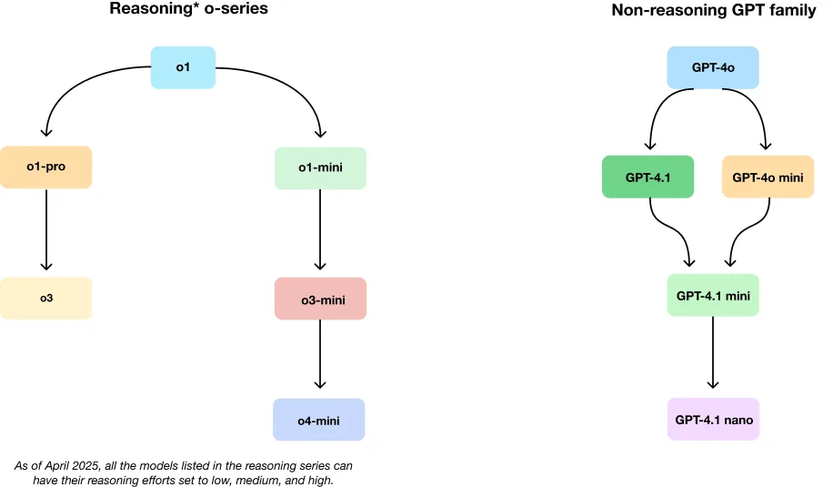
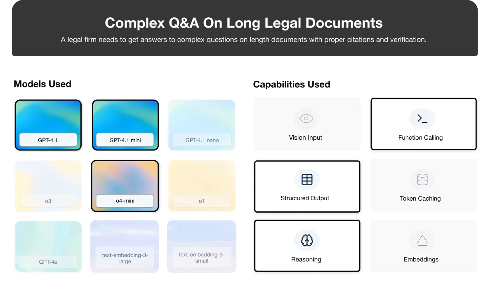
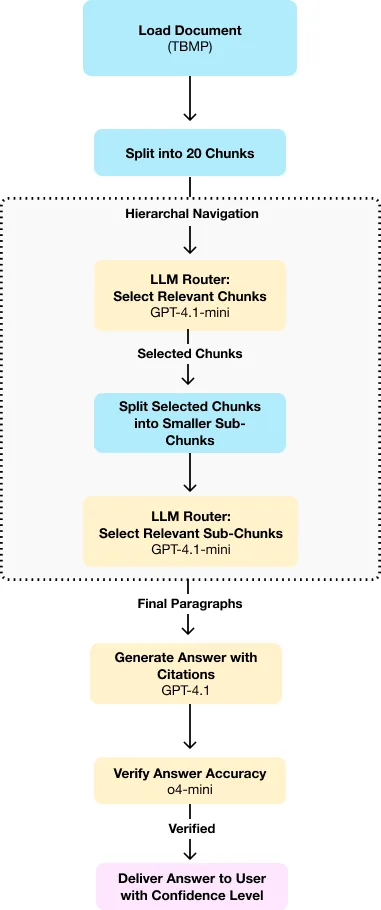
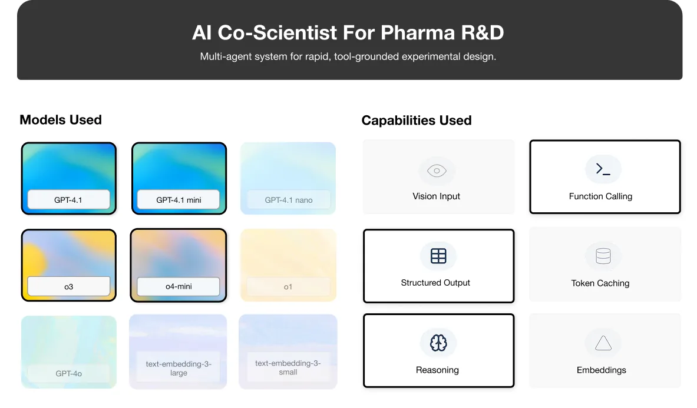
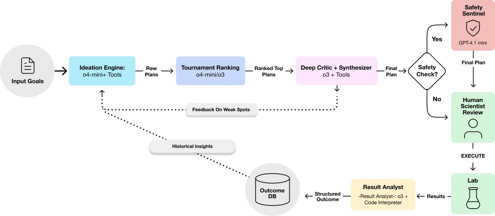
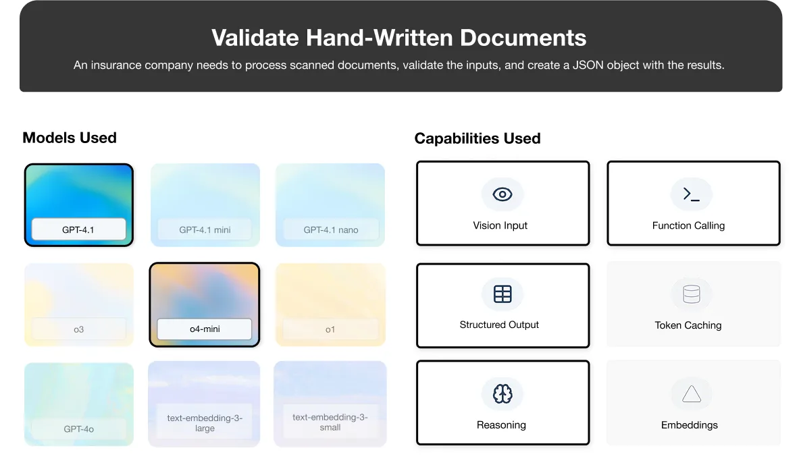
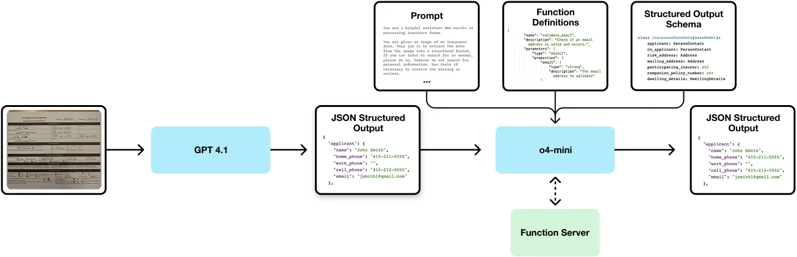
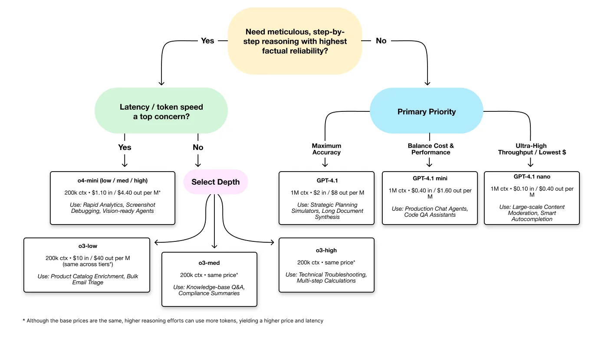

Practical Guide for Model Selection for Real-World Use Cases
This is a reader view of a guide I co-authored with the OpenAI team. The original lives on the OpenAI Cookbook, where you can run the notebook yourself.
Read the originalContents
- Purpose & Audience
- How to Use This Cookbook
- Model Guide
- 2.1 Model‑Intro Matrix
- 2.2 Model Evolution at a Glance
- 3A. Use Case: Long-Context RAG for Legal Q&A
- 3B. Use Case: AI Co-Scientist for Pharma R&D
- 3C. Use Case: Insurance Claim Processing
- Prototype to Production
- Adaptation Decision Tree
- Communicating Model Selection to Non-Technical Stakeholders
- Appendices
- Glossary of Key Terms
- 6.1 Price and Utility Table (Apr 2025)
- 6.2 Prompt-pattern Quick Sheet (Token vs Latency Deltas)
- 6.3 Links to External Cookbooks & Docs
- Contributors
Purpose & Audience
This cookbook serves as your practical guide to selecting, prompting, and deploying the right OpenAI model (between GPT 4.1, o3, and o4-mini) for specific workloads. Instead of exhaustive documentation, we provide actionable decision frameworks and real-world examples that help Solutions Engineers, Technical Account Managers, Partner Architects, and semi-technical practitioners quickly build working solutions. The content focuses on current model capabilities, vertical-specific implementations, and today's industry needs, with clear pathways from model selection to production deployment. Each section offers concise, adaptable code examples that you can immediately apply to your use cases while pointing to existing resources for deeper dives into specific topics.
Note: The below prescriptive guidance and experimentation has been conducted with latest SOTA models available today. These metrics are bound to change in the future with different scenarios and timeline into consideration.
How to Use This Cookbook
This cookbook is organized into distinct sections to help you quickly find the information you need. Each section covers a specific aspect of model selection, implementation, and deployment.
- Purpose & Audience: An overview of who this cookbook is for and what it covers.
- Model Guide: A quick reference to help you select the right model for your needs, including model comparisons and evolution diagrams based on mapping different use-case scenarios.
- Use Cases: - 3A. Long-Context RAG for Legal Q&A: Building an agentic system to answer questions from complex legal documents. - 3B. AI Co-Scientist for Pharma R&D: Accelerating experimental design in pharmaceutical research with multi-agent systems. - 3C. Insurance Claim Processing: Digitizing and validating handwritten insurance forms with vision and reasoning.
- Prototype to Production: A checklist to help you transition from prototype to production.
- Adaptation Decision Tree: A flowchart to guide your model selection based on specific requirements.
- Appendices: Reference materials including pricing, latency, prompt patterns, and links to external resources.
For quick decisions, focus on the Model Guide and Adaptation Decision Tree sections. For implementation details, explore the specific use cases relevant to your needs.
Model Guide
2.1 Model‑Intro Matrix
| Model | Core strength | Ideal first reach‑for | Watch‑outs | Escalate / Downgrade path |
|---|---|---|---|---|
| GPT‑4o | Real‑time voice / vision chat | Live multimodal agents | Slightly below 4.1 on text SOTA (state-of-the-art) | Need deep reasoning → o4‑mini |
| GPT‑4.1 | 1 M‑token text accuracy king | Long‑doc analytics, code review | Cannot natively reason; higher cost than minis | Tight budget → 4.1‑mini / nano |
| o3 | Deep tool‑using agent | High‑stakes, multi‑step reasoning | Latency & price | Cost/latency → o4‑mini |
| o4‑mini | Cheap, fast reasoning | High‑volume "good‑enough" logic | Depth ceiling vs o3 | Accuracy critical → o3 |
(Full price and utility table → Section 6.1)
2.2 Model Evolution at a Glance
OpenAI's model lineup has evolved to address specialized needs across different dimensions. These diagrams showcase the current model families and their relationships.
Fundamental Differences: "o-series" vs "GPT" Models
OpenAI offers two distinct model families, each with unique strengths:
-
GPT Models (4o, 4.1): Optimized for general-purpose tasks with excellent instruction following. GPT-4.1 excels with long contexts (1M tokens) while GPT-4o has variants for realtime speech, text-to-speech, and speech-to-text. GPT-4.1 also comes in a mini, and nano variant, while GPT-4o has a mini variant. These variants are cheaper and faster than their full-size counterparts.
-
o-series Models (o3, o4-mini): Specialized for deep reasoning and step-by-step problem solving. These models excel at complex, multi-stage tasks requiring logical thinking and tool use. Choose these when accuracy and reasoning depth are paramount. These models also have an optional
reasoning_effortparameter (that can be set tolow,medium, orhigh), which allows users to control the amount of tokens used for reasoning.
OpenAI Model Evolution

Key Characteristics
- GPT-4.1 Family: Optimized for long context processing with 1M token context window.
- o3: Specialized for deep multi-step reasoning.
- o4-mini: Combines reasoning capabilities with vision at lower cost.
Each model excels in different scenarios, with complementary strengths that can be combined for complex workflows.
In this cookbook we only experimented with the GPT-4.1 series models, o3, and o4-mini. We didn't experiment with the GPT-4o series models.
3A. Use Case: Long-Context RAG for Legal Q&A

🗂️ TL;DR Matrix
This table summarizes the core technology choices and their rationale for this specific Long-Context Agentic RAG implementation.
| Layer | Choice | Utility |
|---|---|---|
| Chunking | Sentence-aware Splitter | Splits document into 20 equal chunks, respecting sentence boundaries. |
| Routing | gpt-4.1-mini |
Uses natural language understanding to identify relevant chunks without embedding index. |
| Path Selection | select(ids=[...]) and scratchpad(text="...") |
Records reasoning while drilling down through document hierarchy. |
| Citation | Paragraph-level | Balances precision with cost; provides meaningful context for answers. |
| Synthesis | gpt-4.1 (Structured Output) |
Generates answers directly from selected paragraphs with citations. |
| Verification | o4-mini (LLM-as-Judge) |
Validates factual accuracy and citation correctness. |
Note: Prices and model identifiers accurate as of April 2025, subject to change.
This section outlines the construction of a Retrieval-Augmented Generation (RAG) system designed to accurately answer questions about complex and lengthy procedural texts, using the Trademark Trial and Appeal Board Manual of Procedure (TBMP) as a representative case. The TBMP is an essential legal resource detailing the procedures governing trademark litigation before the USPTO's Trademark Trial and Appeal Board, and is frequently consulted by intellectual property attorneys and legal professionals. By leveraging the latest OpenAI models, the system enhances understanding and interpretability of dense legal content, enabling precise, contextually aware responses through advanced language understanding and dynamic retrieval capabilities.
These approaches can also be applied to other use cases that require precise information retrieval from complex documentation, such as healthcare compliance manuals, financial regulatory frameworks, or technical documentation systems where accuracy, citation, and auditability are mission-critical requirements.
1. Scenario Snapshot
- Corpus: The primary document is the Trademark Trial and Appeal Board Manual of Procedure (TBMP, 2024 version). This manual contains detailed procedural rules and guidelines, coming to 1194 pages total.
- Users: The target users are intellectual property (IP) litigation associates and paralegals who need quick, accurate answers to procedural questions based only on the TBMP.
- Typical Asks: Users pose questions requiring synthesis and citation, such as:
1. "What are the requirements for filing a motion to compel discovery according to the TBMP?"
2. "What deadlines apply to discovery conferences as specified in the manual?"
3. "Explain how the Board handles claims of attorney-client privilege during depositions according to the TBMP."
4. "Enumerate the Fed. R. Civ. P. 11 sanctions the Board can invoke according to the TBMP."
Note: Depending on your specific deployment environment, you may need to adapt some implementation steps to match your infrastructure requirements.
While OpenAI's File Search tool offers a good starting point for many use cases, this section introduces a different approach that takes advantage of million-token context windows to process large documents without any preprocessing or vector database. The agentic approach described here enables zero-latency ingestion, dynamic granularity of retrieval, and fine-grained citation traceability.
2. Agentic RAG Flow
Before diving into the implementation, let's understand the overall approach:
- Load the entire document into the context window
- Split into 20 chunks that respect sentence boundaries
- Ask the model which chunks might contain relevant information
- Drill down into selected chunks by splitting them further
- Repeat until we reach paragraph-level content
- Generate an answer based on the selected paragraphs
- Verify the answer for factual accuracy
This hierarchical navigation approach mimics how a human might skim a document, focus on relevant chapters, then specific sections, and finally read only the most relevant paragraphs.

Agentic RAG System: Model Usage
| Process Stage | Model Used | Purpose |
|---|---|---|
| Initial Routing | gpt-4.1-mini |
Identifies which document chunks might contain relevant information |
| Hierarchical Navigation | gpt-4.1-mini |
Continues drilling down to find most relevant paragraphs |
| Answer Generation | gpt-4.1 |
Creates structured response with citations from selected paragraphs |
| Answer Verification | o4-mini |
Validates factual accuracy and proper citation usage |
This zero-preprocessing approach leverages large context windows to navigate documents on-the-fly, mimicking how a human would skim a document to find relevant information.
3. Implementation
Let's implement this approach step by step.
Start by installing the required packages.
Python, 1 line with output
%pip install tiktoken pypdf nltk openai pydantic --quiet
Output
Note: you may need to restart the kernel to use updated packages.3.1 Document Loading
First, let's load the document and check its size. For this guide, we'll focus on sections 100-900, which cover the core procedural aspects through Review of Decision of Board. Sections 1000 and beyond (Interferences, Concurrent Use Proceedings, Ex Parte Appeals) are specialized procedures outside our current scope.
Python, 47 lines with output
import requests
from io import BytesIO
from pypdf import PdfReader
import re
import tiktoken
from nltk.tokenize import sent_tokenize
import nltk
from typing import List, Dict, Any
# Download nltk data if not already present
nltk.download('punkt_tab')
def load_document(url: str) -> str:
"""Load a document from a URL and return its text content."""
print(f"Downloading document from {url}...")
response = requests.get(url)
response.raise_for_status()
pdf_bytes = BytesIO(response.content)
pdf_reader = PdfReader(pdf_bytes)
full_text = ""
max_page = 920 # Page cutoff before section 1000 (Interferences)
for i, page in enumerate(pdf_reader.pages):
if i >= max_page:
break
full_text += page.extract_text() + "\n"
# Count words and tokens
word_count = len(re.findall(r'\b\w+\b', full_text))
tokenizer = tiktoken.get_encoding("o200k_base")
token_count = len(tokenizer.encode(full_text))
print(f"Document loaded: {len(pdf_reader.pages)} pages, {word_count} words, {token_count} tokens")
return full_text
# Load the document
tbmp_url = "https://www.uspto.gov/sites/default/files/documents/tbmp-Master-June2024.pdf"
document_text = load_document(tbmp_url)
# Show the first 500 characters
print("\nDocument preview (first 500 chars):")
print("-" * 50)
print(document_text[:500])
print("-" * 50)
Output
[nltk_data] Downloading package punkt_tab to
[nltk_data] /Users/kmurali/nltk_data...
[nltk_data] Package punkt_tab is already up-to-date!
Downloading document from https://www.uspto.gov/sites/default/files/documents/tbmp-Master-June2024.pdf...
Document loaded: 1194 pages, 595197 words, 932964 tokens
Document preview (first 500 chars):
--------------------------------------------------
TRADEMARK TRIAL AND
APPEAL BOARD MANUAL
OF PROCEDURE (TBMP)
June 2024
June 2024
United States Patent and Trademark Office
PREFACE TO THE JUNE 2024 REVISION
The June 2024 revision of the Trademark Trial and Appeal Board Manual of Procedure is an update of the
June 2023 edition. This update is moderate in nature and incorporates relevant case law issued between March
3, 2023 and March 1, 2024.
The title of the manual is abbreviated as “TBMP.” A citation to a section of the manual may be written
--------------------------------------------------We can see that the document is over 900k tokens long! While we could fit that into GPT 4.1's context length, we also want to have verifiable citations, so we're going to proceed with a recursive chunking strategy.
3.2 Improved 20-Chunk Splitter with Minimum Token Size
Now, let's create an improved function to split the document into 20 chunks, ensuring each has a minimum token size and respecting sentence boundaries.
20 is an empirically chosen number for this specific document/task and it might need tuning for other documents based on size and structure (The higher the number, the more fine-grained the chunks). The key principle here however is splitting sections of the document up, in order to let the language model decide relevant components. This same reasoning also applies to the
max_depthparameter which will be introduced later on in the cookbook.
Python, 85 lines with output
# Global tokenizer name to use consistently throughout the code
TOKENIZER_NAME = "o200k_base"
def split_into_20_chunks(text: str, min_tokens: int = 500) -> List[Dict[str, Any]]:
"""
Split text into up to 20 chunks, respecting sentence boundaries and ensuring
each chunk has at least min_tokens (unless it's the last chunk).
Args:
text: The text to split
min_tokens: The minimum number of tokens per chunk (default: 500)
Returns:
A list of dictionaries where each dictionary has:
- id: The chunk ID (0-19)
- text: The chunk text content
"""
# First, split the text into sentences
sentences = sent_tokenize(text)
# Get tokenizer for counting tokens
tokenizer = tiktoken.get_encoding(TOKENIZER_NAME)
# Create chunks that respect sentence boundaries and minimum token count
chunks = []
current_chunk_sentences = []
current_chunk_tokens = 0
for sentence in sentences:
# Count tokens in this sentence
sentence_tokens = len(tokenizer.encode(sentence))
# If adding this sentence would make the chunk too large AND we already have the minimum tokens,
# finalize the current chunk and start a new one
if (current_chunk_tokens + sentence_tokens > min_tokens * 2) and current_chunk_tokens >= min_tokens:
chunk_text = " ".join(current_chunk_sentences)
chunks.append({
"id": len(chunks), # Integer ID instead of string
"text": chunk_text
})
current_chunk_sentences = [sentence]
current_chunk_tokens = sentence_tokens
else:
# Add this sentence to the current chunk
current_chunk_sentences.append(sentence)
current_chunk_tokens += sentence_tokens
# Add the last chunk if there's anything left
if current_chunk_sentences:
chunk_text = " ".join(current_chunk_sentences)
chunks.append({
"id": len(chunks), # Integer ID instead of string
"text": chunk_text
})
# If we have more than 20 chunks, consolidate them
if len(chunks) > 20:
# Recombine all text
all_text = " ".join(chunk["text"] for chunk in chunks)
# Re-split into exactly 20 chunks, without minimum token requirement
sentences = sent_tokenize(all_text)
sentences_per_chunk = len(sentences) // 20 + (1 if len(sentences) % 20 > 0 else 0)
chunks = []
for i in range(0, len(sentences), sentences_per_chunk):
# Get the sentences for this chunk
chunk_sentences = sentences[i:i+sentences_per_chunk]
# Join the sentences into a single text
chunk_text = " ".join(chunk_sentences)
# Create a chunk object with ID and text
chunks.append({
"id": len(chunks), # Integer ID instead of string
"text": chunk_text
})
# Print chunk statistics
print(f"Split document into {len(chunks)} chunks")
for i, chunk in enumerate(chunks):
token_count = len(tokenizer.encode(chunk["text"]))
print(f"Chunk {i}: {token_count} tokens")
return chunks
# Split the document into 20 chunks with minimum token size
document_chunks = split_into_20_chunks(document_text, min_tokens=500)
Output
Split document into 20 chunks
Chunk 0: 42326 tokens
Chunk 1: 42093 tokens
Chunk 2: 42107 tokens
Chunk 3: 39797 tokens
Chunk 4: 58959 tokens
Chunk 5: 48805 tokens
Chunk 6: 37243 tokens
Chunk 7: 33453 tokens
Chunk 8: 38644 tokens
Chunk 9: 49402 tokens
Chunk 10: 51568 tokens
Chunk 11: 49586 tokens
Chunk 12: 47722 tokens
Chunk 13: 48952 tokens
Chunk 14: 44994 tokens
Chunk 15: 50286 tokens
Chunk 16: 54424 tokens
Chunk 17: 62651 tokens
Chunk 18: 47430 tokens
Chunk 19: 42507 tokens3.3 Router Function with Improved Tool Schema
Now, let's create the router function that will select relevant chunks and maintain a scratchpad.
Maintaining a scratchpad allows the model to track decision criteria and reasoning over time. This implementation uses a two-pass approach with GPT-4.1-mini: first requiring the model to update the scratchpad via a tool call (tool_choice="required"), then requesting structured JSON output for chunk selection. This approach provides better visibility into the model's reasoning process while ensuring consistent structured outputs for downstream processing.
Python, 151 lines
from openai import OpenAI
import json
from typing import List, Dict, Any
# Initialize OpenAI client
client = OpenAI()
def route_chunks(question: str, chunks: List[Dict[str, Any]],
depth: int, scratchpad: str = "") -> Dict[str, Any]:
"""
Ask the model which chunks contain information relevant to the question.
Maintains a scratchpad for the model's reasoning.
Uses structured output for chunk selection and required tool calls for scratchpad.
Args:
question: The user's question
chunks: List of chunks to evaluate
depth: Current depth in the navigation hierarchy
scratchpad: Current scratchpad content
Returns:
Dictionary with selected IDs and updated scratchpad
"""
print(f"\n==== ROUTING AT DEPTH {depth} ====")
print(f"Evaluating {len(chunks)} chunks for relevance")
# Build system message
system_message = """You are an expert document navigator. Your task is to:
1. Identify which text chunks might contain information to answer the user's question
2. Record your reasoning in a scratchpad for later reference
3. Choose chunks that are most likely relevant. Be selective, but thorough. Choose as many chunks as you need to answer the question, but avoid selecting too many.
First think carefully about what information would help answer the question, then evaluate each chunk.
"""
# Build user message with chunks and current scratchpad
user_message = f"QUESTION: {question}\n\n"
if scratchpad:
user_message += f"CURRENT SCRATCHPAD:\n{scratchpad}\n\n"
user_message += "TEXT CHUNKS:\n\n"
# Add each chunk to the message
for chunk in chunks:
user_message += f"CHUNK {chunk['id']}:\n{chunk['text']}\n\n"
# Define function schema for scratchpad tool calling
tools = [
{
"type": "function",
"name": "update_scratchpad",
"description": "Record your reasoning about why certain chunks were selected",
"strict": True,
"parameters": {
"type": "object",
"properties": {
"text": {
"type": "string",
"description": "Your reasoning about the chunk(s) selection"
}
},
"required": ["text"],
"additionalProperties": False
}
}
]
# Define JSON schema for structured output (selected chunks)
text_format = {
"format": {
"type": "json_schema",
"name": "selected_chunks",
"strict": True,
"schema": {
"type": "object",
"properties": {
"chunk_ids": {
"type": "array",
"items": {"type": "integer"},
"description": "IDs of the selected chunks that contain information to answer the question"
}
},
"required": [
"chunk_ids"
],
"additionalProperties": False
}
}
}
# First pass: Call the model to update scratchpad (required tool call)
messages = [
{"role": "system", "content": system_message},
{"role": "user", "content": user_message + "\n\nFirst, you must use the update_scratchpad function to record your reasoning."}
]
response = client.responses.create(
model="gpt-4.1-mini",
input=messages,
tools=tools,
tool_choice="required"
)
# Process the scratchpad tool call
new_scratchpad = scratchpad
for tool_call in response.output:
if tool_call.type == "function_call" and tool_call.name == "update_scratchpad":
args = json.loads(tool_call.arguments)
scratchpad_entry = f"DEPTH {depth} REASONING:\n{args.get('text', '')}"
if new_scratchpad:
new_scratchpad += "\n\n" + scratchpad_entry
else:
new_scratchpad = scratchpad_entry
# Add function call and result to messages
messages.append(tool_call)
messages.append({
"type": "function_call_output",
"call_id": tool_call.call_id,
"output": "Scratchpad updated successfully."
})
# Second pass: Get structured output for chunk selection
messages.append({"role": "user", "content": "Now, select the chunks that could contain information to answer the question. Return a JSON object with the list of chunk IDs."})
response_chunks = client.responses.create(
model="gpt-4.1-mini",
input=messages,
text=text_format
)
# Extract selected chunk IDs from structured output
selected_ids = []
if response_chunks.output_text:
try:
# The output_text should already be in JSON format due to the schema
chunk_data = json.loads(response_chunks.output_text)
selected_ids = chunk_data.get("chunk_ids", [])
except json.JSONDecodeError:
print("Warning: Could not parse structured output as JSON")
# Display results
print(f"Selected chunks: {', '.join(str(id) for id in selected_ids)}")
print(f"Updated scratchpad:\n{new_scratchpad}")
return {
"selected_ids": selected_ids,
"scratchpad": new_scratchpad
}
3.4 Recursive Navigation Function
Now, let's create the recursive navigation function that drills down through the document. max_depth is the maximum number of levels to drill down (keeping token minimums in mind):
Python, 67 lines
def navigate_to_paragraphs(document_text: str, question: str, max_depth: int = 1) -> Dict[str, Any]:
"""
Navigate through the document hierarchy to find relevant paragraphs.
Args:
document_text: The full document text
question: The user's question
max_depth: Maximum depth to navigate before returning paragraphs (default: 1)
Returns:
Dictionary with selected paragraphs and final scratchpad
"""
scratchpad = ""
# Get initial chunks with min 500 tokens
chunks = split_into_20_chunks(document_text, min_tokens=500)
# Navigator state - track chunk paths to maintain hierarchy
chunk_paths = {} # Maps numeric IDs to path strings for display
for chunk in chunks:
chunk_paths[chunk["id"]] = str(chunk["id"])
# Navigate through levels until max_depth or until no chunks remain
for current_depth in range(max_depth + 1):
# Call router to get relevant chunks
result = route_chunks(question, chunks, current_depth, scratchpad)
# Update scratchpad
scratchpad = result["scratchpad"]
# Get selected chunks
selected_ids = result["selected_ids"]
selected_chunks = [c for c in chunks if c["id"] in selected_ids]
# If no chunks were selected, return empty result
if not selected_chunks:
print("\nNo relevant chunks found.")
return {"paragraphs": [], "scratchpad": scratchpad}
# If we've reached max_depth, return the selected chunks
if current_depth == max_depth:
print(f"\nReturning {len(selected_chunks)} relevant chunks at depth {current_depth}")
# Update display IDs to show hierarchy
for chunk in selected_chunks:
chunk["display_id"] = chunk_paths[chunk["id"]]
return {"paragraphs": selected_chunks, "scratchpad": scratchpad}
# Prepare next level by splitting selected chunks further
next_level_chunks = []
next_chunk_id = 0 # Counter for new chunks
for chunk in selected_chunks:
# Split this chunk into smaller pieces
sub_chunks = split_into_20_chunks(chunk["text"], min_tokens=200)
# Update IDs and maintain path mapping
for sub_chunk in sub_chunks:
path = f"{chunk_paths[chunk['id']]}.{sub_chunk['id']}"
sub_chunk["id"] = next_chunk_id
chunk_paths[next_chunk_id] = path
next_level_chunks.append(sub_chunk)
next_chunk_id += 1
# Update chunks for next iteration
chunks = next_level_chunks
3.5 Run the Improved Navigation for a Sample Question
Let's run the navigation for a sample question with our improved approach:
Python, 12 lines with output
# Run the navigation for a sample question
question = "What format should a motion to compel discovery be filed in? How should signatures be handled?"
navigation_result = navigate_to_paragraphs(document_text, question, max_depth=2)
# Sample retrieved paragraph
print("\n==== FIRST 3 RETRIEVED PARAGRAPHS ====")
for i, paragraph in enumerate(navigation_result["paragraphs"][:3]):
display_id = paragraph.get("display_id", str(paragraph["id"]))
print(f"\nPARAGRAPH {i+1} (ID: {display_id}):")
print("-" * 40)
print(paragraph["text"])
print("-" * 40)
Output
Split document into 20 chunks
Chunk 0: 42326 tokens
Chunk 1: 42093 tokens
Chunk 2: 42107 tokens
Chunk 3: 39797 tokens
Chunk 4: 58959 tokens
Chunk 5: 48805 tokens
Chunk 6: 37243 tokens
Chunk 7: 33453 tokens
Chunk 8: 38644 tokens
Chunk 9: 49402 tokens
Chunk 10: 51568 tokens
Chunk 11: 49586 tokens
Chunk 12: 47722 tokens
Chunk 13: 48952 tokens
Chunk 14: 44994 tokens
Chunk 15: 50286 tokens
Chunk 16: 54424 tokens
Chunk 17: 62651 tokens
Chunk 18: 47430 tokens
Chunk 19: 42507 tokens
==== ROUTING AT DEPTH 0 ====
Evaluating 20 chunks for relevance
Selected chunks: 0, 1, 2, 3, 4, 5, 6, 7, 8
Updated scratchpad:
DEPTH 0 REASONING:
The user wants to know the format requirements for filing a motion to compel discovery and how signatures should be handled for such motions.
Based on the evaluation of chunks:
- Chunks 0, 1, 2, 3, 4, 5, 6, 7, 8 are highly relevant since they cover general requirements for submissions, motions, signatures, service, and specifically for motions and discovery in TTAB proceedings.
- These chunks contain detailed info about electronic filing (via ESTTA), paper filing exceptions, signature requirements, service requirements, format of submissions (including motions), timing rules, and professionals' responsibilities.
- Additionally, the rules for motions to compel, including required attachments, timing, and certification of good faith efforts to resolve discovery disputes, are specifically outlined.
- Chunks 11-19 mostly cover post-trial and appeal procedures, less directly relevant.
I will select these relevant chunks to provide a thorough answer about how motions to compel discovery should be filed and how signatures on such motions are handled.
Split document into 20 chunks
Chunk 0: 3539 tokens
Chunk 1: 2232 tokens
Chunk 2: 1746 tokens
Chunk 3: 3078 tokens
Chunk 4: 1649 tokens
Chunk 5: 2779 tokens
Chunk 6: 2176 tokens
Chunk 7: 1667 tokens
Chunk 8: 1950 tokens
Chunk 9: 1730 tokens
Chunk 10: 1590 tokens
Chunk 11: 1964 tokens
Chunk 12: 1459 tokens
Chunk 13: 2070 tokens
Chunk 14: 2422 tokens
Chunk 15: 1976 tokens
Chunk 16: 2335 tokens
Chunk 17: 2694 tokens
Chunk 18: 2282 tokens
Chunk 19: 982 tokens
Split document into 20 chunks
Chunk 0: 2880 tokens
Chunk 1: 1323 tokens
… 391 more lines in the original notebookGPT 4.1-mini's results show the iterative extraction of relevant components in a document with the scratchpad explaining it's thought process through it! At depth 1, the model identifies "Detailed rules for signatures on submissions including motions" and "use of ESTTA, required signature format including electronic signatures with the symbol method '/sig/'" as critical components needed to answer the query.
By depth 2, the scratchpad demonstrates sophisticated judgment by isolating precisely which chunks contain vital regulations about electronic signatures (chunks 5-12) while maintaining awareness of absent content, noting "discovery-related motions... should be in chunks from 400 onwards (although these aren't fully visible here...)".
This process shows how GPT 4.1 mimics a legal analyst, through iteratively digging deeper into relevant content, and explaining it's reasoning along the way (making it easier to debug why the model selected the chunks it did)
3.6 Answer Generation
Now, let's generate an answer using GPT-4.1 with the retrieved paragraphs.
We do a nifty trick here where we dynamically construct a List of Literals (which forces the model's answers to be one of the options we provide -- in this case the paragraph IDs). There are some restrictions on the number of options we can provide, so if you find your system citing > 500 documents, then this solution might not work. In that case, you can either have a filter to go up to 500 potential citations, or you can ask the model to cite the exact ID in it's response, then post-process the response to extract the IDs, thus the citations (e.g. it might say "... [doc 0.0.12]", and you could use some regex to extract the citation).
Python, 71 lines with output
from typing import List, Dict, Any
from pydantic import BaseModel, field_validator
class LegalAnswer(BaseModel):
"""Structured response format for legal questions"""
answer: str
citations: List[str]
@field_validator('citations')
def validate_citations(cls, citations, info):
# Access valid_citations from the model_config
valid_citations = info.data.get('_valid_citations', [])
if valid_citations:
for citation in citations:
if citation not in valid_citations:
raise ValueError(f"Invalid citation: {citation}. Must be one of: {valid_citations}")
return citations
def generate_answer(question: str, paragraphs: List[Dict[str, Any]],
scratchpad: str) -> LegalAnswer:
"""Generate an answer from the retrieved paragraphs."""
print("\n==== GENERATING ANSWER ====")
# Extract valid citation IDs
valid_citations = [str(p.get("display_id", str(p["id"]))) for p in paragraphs]
if not paragraphs:
return LegalAnswer(
answer="I couldn't find relevant information to answer this question in the document.",
citations=[],
_valid_citations=[]
)
# Prepare context for the model
context = ""
for paragraph in paragraphs:
display_id = paragraph.get("display_id", str(paragraph["id"]))
context += f"PARAGRAPH {display_id}:\n{paragraph['text']}\n\n"
system_prompt = """You are a legal research assistant answering questions about the
Trademark Trial and Appeal Board Manual of Procedure (TBMP).
Answer questions based ONLY on the provided paragraphs. Do not rely on any foundation knowledge or external information or extrapolate from the paragraphs.
Cite phrases of the paragraphs that are relevant to the answer. This will help you be more specific and accurate.
Include citations to paragraph IDs for every statement in your answer. Valid citation IDs are: {valid_citations_str}
Keep your answer clear, precise, and professional.
"""
valid_citations_str = ", ".join(valid_citations)
# Call the model using structured output
response = client.responses.parse(
model="gpt-4.1",
input=[
{"role": "system", "content": system_prompt.format(valid_citations_str=valid_citations_str)},
{"role": "user", "content": f"QUESTION: {question}\n\nSCRATCHPAD (Navigation reasoning):\n{scratchpad}\n\nPARAGRAPHS:\n{context}"}
],
text_format=LegalAnswer,
temperature=0.3
)
# Add validation information after parsing
response.output_parsed._valid_citations = valid_citations
print(f"\nAnswer: {response.output_parsed.answer}")
print(f"Citations: {response.output_parsed.citations}")
return response.output_parsed
# Generate an answer
answer = generate_answer(question, navigation_result["paragraphs"],
navigation_result["scratchpad"])
Output
==== GENERATING ANSWER ====
Answer: A motion to compel discovery must be filed electronically with the Trademark Trial and Appeal Board (TTAB) through ESTTA, unless ESTTA is unavailable due to technical problems or there are extraordinary circumstances, in which case a paper submission may be permitted with a written explanation ("Documents that relate to proceedings before the Trademark Trial and Appeal Board must be filed electronically with the Board through ESTTA"; "The rules require that all submissions must be made to the Board electronically, currently through ESTTA, subject to certain limited exceptions permitting submissions to be made on paper. Any permitted paper submission must be accompanied by a written explanation showing that ESTTA was unavailable due to technical problems, or that extraordinary circumstances are present, and, where required, a Petition to the Director with the requisite petition fee" 0.0.5.0, 0.0.5.5.7.3).
The motion should include a title describing its nature, such as “Motion to Compel,” and should bear the appropriate proceeding number and caption at the top of the first page ("The document should also include a title describing its nature, e.g., 'Motion to Compel'... should bear at the top of the first page both the application serial number, and the inter partes proceeding number and caption" 0.0.5.4).
Every submission, including a motion to compel discovery, must be signed by the party filing it, or by the party’s attorney or other authorized representative. For electronic filings through ESTTA, a conventional handwritten signature is not required; instead, an electronic signature is used. The signatory must personally enter a combination of letters, numbers, spaces, and/or punctuation marks between two forward slash ('/') symbols (e.g., /John Smith/), and the signatory's name and title or position must appear immediately below or adjacent to the signature ("Documents filed electronically, including through ESTTA, do not require a conventional signature. Electronic signatures pursuant to 37 C.F.R. § 2.193(c) are required for electronic filings. The party or its representative enters a 'symbol' that has been adopted as a signature. The Board will accept any combination of letters, numbers, space and/or punctuation marks as a valid signature if it is placed between two forward slash ('/') symbols"; "The first and last name, and the title or position, of the person who signs a document in connection with a trademark application, registration, or proceeding before the Trademark Trial and Appeal Board must be set forth immediately below or adjacent to the signature" 0.0.5.5.6.2, 0.0.5.5.6.0).
If a document is filed on behalf of a party by the party’s attorney or other authorized representative, it must bear the signature of that attorney or representative, unless the document is one required to be signed personally by the party (0.0.5.5.6.3). If an unsigned or improperly signed document is filed, it will not be refused consideration if a properly signed copy is submitted within the time limit set in the notification of the defect by the Board (0.0.5.5.6.4).
In summary: File the motion to compel discovery electronically via ESTTA, use an electronic signature as described above, and ensure the signatory's name and title are included. If filing on paper is necessary, follow the specific requirements for paper submissions and signatures.
Citations: ['0.0.5.0', '0.0.5.4', '0.0.5.5.6.0', '0.0.5.5.6.2', '0.0.5.5.6.3', '0.0.5.5.6.4', '0.0.5.5.7.3']GPT 4.1 effectively integrates citations throughout its response while maintaining a clear flow of information. Each procedural requirement is linked to specific authoritative references (like "0.0.5.0" and "0.0.5.5.6.2"), creating a response that's both informative and precisely sourced.
Rather than simply listing citations at the end, it weaves them directly into the content using parenthetical notation after each key requirement. This approach transforms a standard recitation of rules into a well-supported legal analysis where statements about ESTTA filing procedures, electronic signature requirements, and paper submission exceptions are immediately backed by their corresponding regulatory citations.
3.7 Answer Verification
Let's first look at the cited paragraphs:
Python, 15 lines with output
cited_paragraphs = []
for paragraph in navigation_result["paragraphs"]:
para_id = str(paragraph.get("display_id", str(paragraph["id"])))
if para_id in answer.citations:
cited_paragraphs.append(paragraph)
# Display the cited paragraphs for the audience
print("\n==== CITED PARAGRAPHS ====")
for i, paragraph in enumerate(cited_paragraphs):
display_id = paragraph.get("display_id", str(paragraph["id"]))
print(f"\nPARAGRAPH {i+1} (ID: {display_id}):")
print("-" * 40)
print(paragraph["text"])
print("-" * 40)
Output
==== CITED PARAGRAPHS ====
PARAGRAPH 1 (ID: 0.0.5.0):
----------------------------------------
104 Business to be Conducted in Writing
37 C.F.R. § 2.190(b) Electronic trademark documents. … Documents that r elate to proceedings before
the Trademark Trial and Appeal Board must be filed electronically with the Board through ESTTA. 37 C.F.R. § 2.191 Action of the Office based on the written record. All business with the Office must be
transacted in writing. The action of the Office will be based exclusively on the written record. No consideration
will be given to any alleged oral promise, stipulation, or understanding when there is disagreement or doubt. With the exceptions of discovery conferences with Board participation, see TBMP § 401.01, and telephone
conferences, see TBMP § 413.01 and TBMP § 502.06, all business with the Board should be transacted in
writing. 37 C.F.R. § 2.191 . The personal attendance of parties or their attorne ys or other authorized
representatives at the offices of the Board is unnecessary , except in the case of a pretrial conference as
provided in 37 C.F.R. § 2.120(j), or upon oral argument at final hearing, if a party so desires, as pro vided
in 37 C.F.R. § 2.129. Decisions of the Board will be based exclusively on the written record before it. [Note
1.] Documents filed in proceedings before the Board must be filed through ESTT A. 37 C.F.R. § 2.190(b). See TBMP § 110.01(a). Board proceedings are conducted in English. If a party intends to rely upon an y submissions that are in a
language other than English, the party should also file a translation of the submissions. If a translation is
not filed, the submissions may not be considered. [Note 2.] NOTES:
1. Cf.
----------------------------------------
PARAGRAPH 2 (ID: 0.0.5.4):
----------------------------------------
The document should
also include a title describing its nature, e.g., “Notice of Opposition,” “Answer,” “Motion to Compel,” “Brief
in Opposition to Respondent’s Motion for Summary Judgment,” or “Notice of Reliance.”
Documents filed in an application which is the subject of an inter partes proceeding before the Board should
be filed with the Board, not the Trademark Operation, and should bear at the top of the first page both the
application serial number, and the inter partes proceeding number and caption. Similarly , requests under
Trademark Act § 7, 15 U.S.C. § 1057, to amend, correct, or surrender a registration which is the subject of
a Board inter partes proceeding, and any new power of attorney, designation of domestic representative, or
change of address submitted in connection with such a registration, should be filed with the Board, not with
the Trademark Operation, and should bear at the top of its first page the re gistration number, and the inter
partes proceeding number and the proceeding caption. [Note 2.] 100-14June 2024
TRADEMARK TRIAL AND APPEAL BOARD MANUAL OF PROCEDURE§ 105
NOTES:
1. 37 C.F.R. § 2.194. 2. 37 C.F.R. § 2.194. 106.02 Signature of Submissions
37 C.F.R. § 2.119(e) Every submission filed in an inter partes proceeding, and every request for an extension
of time to file an opposition, must be signed by the party filing it, or by the party’s attorney or other authorized
representative, but an unsigned submission will not be r efused consideration if a signed copy is submitted
to the Office within the time limit set in the notification of this defect by the Office. 37 C.F.R. § 11.14(e) Appearance.
----------------------------------------
PARAGRAPH 3 (ID: 0.0.5.5.6.0):
----------------------------------------
The Office will accept an electronic signature that meets the
requirements of paragraph (c) of this section on correspondence filed on paper or through TEAS or ESTTA. (b) Copy of original signature. If a copy of an original signature is filed, the filer should retain the
original as evidence of authenticity. If a question of authenticity arises, the Office may require submission
of the original. (c) Requirements for electronic signature. A person signing a document electronically must:
(1) Personally enter any combination of letters, numbers, spaces and/or punctuation marks that the
signer has adopted as a signature, placed between two forward slash (“/”) symbols in the signature block
on the electronic submission; or
(2) Sign the verified statement using some other form of electronic signature specified by the Director. (d) Signatory must be identified. The first and last name, and the title or position, of the person who
signs a document in connection with a trademark application, registration, or proceeding before the
Trademark Trial and Appeal Board must be set forth immediately below or adjacent to the signature. (e) Proper person to sign. Documents filed in connection with a trademark application or registration
must be signed as specified in paragraphs (e)(1) through (9) of this section. (2) Responses, amendments to applications, requests for express abandonment, requests for
reconsideration of final actions, and requests to divide. Responses to Office actions, amendments to
applications, requests for express abandonment, requests for reconsideration of final actions, and requests
to divide must be signed by the owner of the application or registration, someone with legal authority to
bind the owner (e.g.
… 82 more lines in the original notebookThe "List of Literals" trick forces the model to cite only specific paragraph IDs (like "0.0.5.4") rather than making up its own references or highlighting random text — imagine it as creating a digital "table of contents" that GPT-4.1 can only select from. This solution ensures you get verifiable citation trails back to exact source material, solving an important problem in long-context RAG.
Finally, let's verify the answer with an LLM-as-judge approach.
Python, 83 lines with output
from typing import List, Dict, Any, Literal
from pydantic import BaseModel
class VerificationResult(BaseModel):
"""Verification result format"""
is_accurate: bool
explanation: str
confidence: Literal["high", "medium", "low"]
def verify_answer(question: str, answer: LegalAnswer,
cited_paragraphs: List[Dict[str, Any]]) -> VerificationResult:
"""
Verify if the answer is grounded in the cited paragraphs.
Args:
question: The user's question
answer: The generated answer
cited_paragraphs: Paragraphs cited in the answer
Returns:
Verification result with accuracy assessment, explanation, and confidence level
"""
print("\n==== VERIFYING ANSWER ====")
# Prepare context with the cited paragraphs
context = ""
for paragraph in cited_paragraphs:
display_id = paragraph.get("display_id", str(paragraph["id"]))
context += f"PARAGRAPH {display_id}:\n{paragraph['text']}\n\n"
# Prepare system prompt
system_prompt = """You are a fact-checker for legal information.
Your job is to verify if the provided answer:
1. Is factually accurate according to the source paragraphs
2. Uses citations correctly
Be critical and look for any factual errors or unsupported claims.
Assign a confidence level based on how directly the paragraphs answer the question:
- high: The answer is comprehensive, accurate, and directly supported by the paragraphs
- medium: The answer is mostly accurate but may be incomplete or have minor issues
- low: The answer has significant gaps, inaccuracies, or is poorly supported by the paragraphs
"""
response = client.responses.parse(
model="o4-mini",
input=[
{"role": "system", "content": system_prompt},
{"role": "user", "content": f"""
QUESTION: {question}
ANSWER TO VERIFY:
{answer.answer}
CITATIONS USED: {', '.join(answer.citations)}
SOURCE PARAGRAPHS:
{context}
Is this answer accurate and properly supported by the source paragraphs?
Assign a confidence level (high, medium, or low) based on completeness and accuracy.
"""}
],
text_format=VerificationResult
)
# Log and return the verification result
print(f"\nAccuracy verification: {'PASSED' if response.output_parsed.is_accurate else 'FAILED'}")
print(f"Confidence: {response.output_parsed.confidence}")
print(f"Explanation: {response.output_parsed.explanation}")
return response.output_parsed
# Verify the answer using only the cited paragraphs
verification = verify_answer(question, answer, cited_paragraphs)
# Display final result with verification
print("\n==== FINAL VERIFIED ANSWER ====")
print(f"Verification: {'PASSED' if verification.is_accurate else 'FAILED'} | Confidence: {verification.confidence}")
print("\nAnswer:")
print(answer.answer)
print("\nCitations:")
for citation in answer.citations:
print(f"- {citation}")
Output
==== VERIFYING ANSWER ====
Accuracy verification: PASSED
Confidence: high
Explanation: The answer correctly states that motions to compel discovery must be filed electronically through ESTTA, with paper submissions permitted only under the limited exceptions of technical failure or extraordinary circumstances (37 C.F.R. § 2.190(b) and 2.193(b)). It accurately describes the required title and caption placement (TBMP § 105), and it appropriately summarizes the signature requirements for electronic filings (37 C.F.R. § 2.193(c) and TBMP §§ 106.02, 106.02(b)–(e)), including the use of slash‐enclosed electronic signatures and identification of the signatory’s name and title. It also correctly notes the rule regarding defective signatures (37 C.F.R. § 2.119(e) and TBMP § 106.02). The citations align with the source paragraphs.
==== FINAL VERIFIED ANSWER ====
Verification: PASSED | Confidence: high
Answer:
A motion to compel discovery must be filed electronically with the Trademark Trial and Appeal Board (TTAB) through ESTTA, unless ESTTA is unavailable due to technical problems or there are extraordinary circumstances, in which case a paper submission may be permitted with a written explanation ("Documents that relate to proceedings before the Trademark Trial and Appeal Board must be filed electronically with the Board through ESTTA"; "The rules require that all submissions must be made to the Board electronically, currently through ESTTA, subject to certain limited exceptions permitting submissions to be made on paper. Any permitted paper submission must be accompanied by a written explanation showing that ESTTA was unavailable due to technical problems, or that extraordinary circumstances are present, and, where required, a Petition to the Director with the requisite petition fee" 0.0.5.0, 0.0.5.5.7.3).
The motion should include a title describing its nature, such as “Motion to Compel,” and should bear the appropriate proceeding number and caption at the top of the first page ("The document should also include a title describing its nature, e.g., 'Motion to Compel'... should bear at the top of the first page both the application serial number, and the inter partes proceeding number and caption" 0.0.5.4).
Every submission, including a motion to compel discovery, must be signed by the party filing it, or by the party’s attorney or other authorized representative. For electronic filings through ESTTA, a conventional handwritten signature is not required; instead, an electronic signature is used. The signatory must personally enter a combination of letters, numbers, spaces, and/or punctuation marks between two forward slash ('/') symbols (e.g., /John Smith/), and the signatory's name and title or position must appear immediately below or adjacent to the signature ("Documents filed electronically, including through ESTTA, do not require a conventional signature. Electronic signatures pursuant to 37 C.F.R. § 2.193(c) are required for electronic filings. The party or its representative enters a 'symbol' that has been adopted as a signature. The Board will accept any combination of letters, numbers, space and/or punctuation marks as a valid signature if it is placed between two forward slash ('/') symbols"; "The first and last name, and the title or position, of the person who signs a document in connection with a trademark application, registration, or proceeding before the Trademark Trial and Appeal Board must be set forth immediately below or adjacent to the signature" 0.0.5.5.6.2, 0.0.5.5.6.0).
If a document is filed on behalf of a party by the party’s attorney or other authorized representative, it must bear the signature of that attorney or representative, unless the document is one required to be signed personally by the party (0.0.5.5.6.3). If an unsigned or improperly signed document is filed, it will not be refused consideration if a properly signed copy is submitted within the time limit set in the notification of the defect by the Board (0.0.5.5.6.4).
In summary: File the motion to compel discovery electronically via ESTTA, use an electronic signature as described above, and ensure the signatory's name and title are included. If filing on paper is necessary, follow the specific requirements for paper submissions and signatures.
Citations:
- 0.0.5.0
- 0.0.5.4
- 0.0.5.5.6.0
- 0.0.5.5.6.2
- 0.0.5.5.6.3
- 0.0.5.5.6.4
- 0.0.5.5.7.3The verification step produces a clean, structured assessment that references specific regulations and methodically checks both the answer's accuracy and its proper use of citations. Rather than just saying "correct," it offers useful context by explaining exactly why the answer was correct, giving you the confidence to then present the answer to the user with specific citations
4. Infrastructure Costs
Let's break down the cost structure for this agentic RAG approach:
Estimated Fixed vs. Variable Costs
- Estimated Fixed (One-time) Costs:
- Traditional RAG: ~$0.43 (embedding + metadata generation)
-
Agentic RAG: $0.00 (zero preprocessing required)
-
Estimated Variable (Per-Query) Costs:
- Router Model (
gpt-4.1-mini):- Initial routing (20 chunks): ~$0.10
- Two recursive levels: ~$0.20
- Synthesis (
gpt-4.1): ~$0.05 - Verification (
o4-mini): ~$0.01 - Total per query: ~$0.36
While the per-query cost is higher than traditional RAG, this approach offers: - Immediate results on new documents - More precise citations - Better handling of paraphrases and conceptual questions - No infrastructure maintenance overhead
The cost can be optimized through: - Caching results for common queries - Limiting max tokens in the model calls - Using a hybrid approach that pre-filters the document first
5. Benefits and Tradeoffs versus Traditional RAG
Benefits
- Zero-ingest latency: Answer questions from new documents immediately, with no preprocessing.
- Dynamic navigation: Mimics human reading patterns by focusing on promising sections.
- Cross-section reasoning: Model can find connections across document sections that might be missed by independent chunk retrieval, potentially increasing accuracy of generated answers and saving time on optimizing retrieval pipelines.
Tradeoffs
- Higher per-query cost: Requires more computation for each question compared to embedding-based retrieval.
- Increased latency: Hierarchical navigation takes longer to process than simple vector lookups.
- Limited scalability: May struggle with extremely large document collections where preprocessing becomes more efficient.
6. Future Steps
There are a few modifications we can make to the approach taken: - Generating a Knowledge Graph: We can use the large context window of GPT 4.1-mini to iteratively generate a detailed knowledge graph, and then GPT 4.1 can traverse this graph to answer questions. This way we only need to "ingest" the document once, regardless of the question. - Improved Scratchpad Tool: The scratchpad tool could be given more choices such as editing or deleting past memory. This would allow the model to choose whatever is most relevant to the question at hand - Adjust Depth: We can adjust the depth of the hierarchical navigation to find the right balance between cost and performance. Certain usecases will require sentence level citations (like legal documents), while others may only require paragraph level citations (like news articles).
7. Takeaways
- Context Window is a Superpower: Million-token context windows make it possible to navigate documents on-the-fly.
- Hierarchical Approach Mimics Human Reading: Agentic routing works like a human skimming a document for relevant sections.
- Scratchpad Enables Multi-Step Reasoning: Maintaining a reasoning record improves navigation quality.
- Fast Implementation, No Database: The entire system can be built with just API calls, no infrastructure needed.
- Verification Improves Reliability: The LLM-as-judge pattern catches errors before they reach users.
3B. Use Case: AI Co-Scientist for Pharma R&D

This section details how to build an AI system that functions as a "co-scientist" to accelerate experimental design in pharmaceutical R&D, focusing on optimizing a drug synthesis process under specific constraints.
🗂️ TL;DR Matrix
This table summarizes the core technology choices and their rationale for this specific AI Co-Scientist implementation.
| Layer | Choice | Utility |
|---|---|---|
| Ideation | o4-mini (Parallel Role-Playing Agents) |
Generates diverse hypotheses & protocols rapidly and cost-effectively; role-playing enhances creativity. |
| Grounding | External Tool Calls (chem_lookup, cost_estimator, outcome_db, etc.) |
Ensures plans are based on real-world data (chemical properties, costs, past results). |
| Ranking | o4-mini (Pairwise Tournament Comparison) |
Nuanced evaluation beyond simple scoring; selects promising candidates efficiently. |
| Critique/Synth | o3 (Deep Review & Synthesis) |
Provides rigorous, senior-level analysis, identifies risks, and ensures scientific validity. |
| Safety (Opt.) | gpt-4.1-mini (Targeted Check) |
Adds an extra layer of specialized safety review before human handoff. |
| Learning | o3 + Code Interpreter (Result Analysis → DB) |
Captures experimental outcomes systematically, enabling continuous improvement over time. |
| Core Technique | Multi-Agent Collaboration & Escalation | Leverages strengths of different models (speed vs. depth) for a complex, multi-step reasoning task. |
Note: Model identifiers accurate as of April 2025, subject to change.
1. Scenario Snapshot
- Problem Space: Optimizing complex experimental procedures in pharmaceutical R&D, such as improving the synthesis yield of a new drug compound ("XYZ-13") while adhering to strict constraints.
- Users: Research scientists and lab technicians involved in drug discovery and development.
- Typical Asks:
- Suggest 3 distinct protocols to increase XYZ-13 yield by ≥15% by testing different catalysts, staying under $15k using approved reagents.
- Propose protocols to optimize XYZ-13 yield below 60°C (due to past heat issues), exploring different approved solvents within budget.
- Design two XYZ-13 yield strategies (aiming for ≥15%): a. one maximizing potential yield within the \$15k budget, b. one prioritizing cost under \$10k.
- Constraints:
- Budgetary: Operate within defined financial limits (e.g., $15,000 per experiment series).
- Regulatory/Safety: Use only pre-approved chemicals/reagents and adhere rigorously to safety protocols.
- Human Oversight: Final experimental plans must be reviewed and validated by a human expert before execution.
Traditionally, optimizing such experiments involves weeks of manual planning, literature review, iterative benchwork, and analysis. This AI Co-Scientist approach aims to dramatically reduce the cycle time by automating hypothesis generation, protocol design, and preliminary evaluation, enabling scientists to focus on higher-level strategy and final validation. It shifts the scientist's role from manual execution of planning steps to expert oversight and collaboration with the AI.
2. Architecture (Multi-Agent Reasoning)
The system employs a multi-agent architecture that emulates a high-performing scientific team. Different AI components, acting in specialized roles (such as ideation, critique, and learning from outcomes), collaborate using various models and tools to execute the workflow.

2.1. Scientist Input & Constraints:
The process starts with the scientist defining the goal, target compound, and constraints.
Python, 12 lines
from openai import OpenAI
from agent_utils import Context, call_openai, log_json
# Example Initial Input
user_input = {
"compound": "XYZ-13",
"goal": "Improve synthesis yield by 15%",
"budget": 15000,
"time_h": 48,
"previous": "Prior attempts failed at high temp; explore potential catalyst effects."
}
ctx = Context(client=OpenAI(), **user_input)
2.2. Ideation (o4-mini + Tools):
Multiple o4-mini instances, prompted with different roles (e.g., Hypothesis Agent, Protocol Agent, Resource Agent), generate experimental plans in parallel. Assigning distinct personas encourages diverse perspectives and covers different aspects of the problem simultaneously during the ideation phase.
Python, 25 lines
ROLE_FOCUS = {
# Hypothesis Agent Prompt
"hypothesis_agent": """You are a pharmaceutical hypothesis specialist.
Focus exclusively on analyzing the compound structure and research goals to generate testable hypotheses.
Consider mechanism of action, binding affinity predictions, and potential off-target effects.""",
# Protocol Agent Prompt
"protocol_agent" : """You are a laboratory protocol specialist.
Design experimental procedures that will effectively test the provided hypothesis.
Focus on experimental conditions, controls, and measurement techniques.""",
# Resource Agent Prompt
"resource_agent" : """You are a laboratory resource optimization specialist.
Review the proposed protocol and optimize for efficiency.
Identify opportunities to reduce reagent use, equipment time, and overall costs while maintaining scientific validity.""",
}
# Create a structured prompt template for ideation
IDEATION_PROMPT = """You are a pharmaceutical {role} specialist. Your goal is to {goal} for compound {compound}.
Constraints:
- Budget: ${budget}
- Approved reagents only
- Complete within {time_h} hours
- Previous attempts: {previous}
Respond with structured JSON describing your protocol."""
Python, 24 lines with output
import json, logging
from pathlib import Path
from typing import Dict, List, Any, Optional
from dataclasses import asdict
from functools import partial
MODEL_IDEATE = "o4-mini-2025-04-16" # o4-mini model for ideation - balances speed and quality
# Configure logging to help with tracking experiment progress and debugging
logging.basicConfig(level=logging.INFO, format="%(message)s")
logging.info(f"Run‑id {ctx.run_id} Compound: {ctx.compound}")
logging.info(f"Logs will be stored in: {Path('logs') / ctx.run_id}")
def ideation(ctx: Context):
logging.info("Starting ideation phase...")
ideas = []
for role, focus in ROLE_FOCUS.items():
logging.info(f"Running ideation agent ${role}")
sys = IDEATION_PROMPT.format(role=role, focus=focus, **ctx.prompt_vars())
usr = f"Design a protocol to {ctx.goal} within ${ctx.budget}."
idea = call_openai(ctx.client, MODEL_IDEATE, sys, usr, ctx)
ideas.append(idea)
log_json("ideation_done", ideas, ctx)
return ideas
Output
Run‑id 9835f69c Compound: XYZ-13
Logs will be stored in: logs/9835f69cThe ideation agents can utilize external tools such as literature_search, chem_lookup (chemical database), cost_estimator, outcome_db (outcome of previous experiments) to ground their suggestions in data. Explicitly enabling and prompting models to use external tools ensures that generated plans are feasible, compliant, and informed by existing knowledge. The model decides when and which tool to call based on the task.
Python, 8 lines with output
IDEATION_PROMPT += """\nUse the following tools as appropriate:
- Use the `list_available_chemicals` tool to get list of approved reagents.
- Use the `chem_lookup` tool to verify properties of reagents mentioned.
- Use the `cost_estimator` tool to calculate the approximate cost based on reagents and proposed steps.
- Check the `outcome_db` for relevant prior experiments with {compound}"""
ideas = ideation(ctx)
logging.info("Ideation complete!")
Output
Starting ideation phase...
Running ideation agent $hypothesis_agent
HTTP Request: POST https://api.openai.com/v1/chat/completions "HTTP/1.1 200 OK"
(Tool) List available chemicals
HTTP Request: POST https://api.openai.com/v1/chat/completions "HTTP/1.1 200 OK"
(Tool) Outcome DB: XYZ-13, yield, 5
HTTP Request: POST https://api.openai.com/v1/chat/completions "HTTP/1.1 200 OK"
(Tool) Cost estimator: [{'name': 'Palladium chloride', 'amount': 0.05, 'unit': 'g'}, {'name': 'Triphenylphosphine', 'amount': 0.1, 'unit': 'g'}, {'name': 'Potassium carbonate', 'amount': 1, 'unit': 'g'}, {'name': 'Dimethylformamide', 'amount': 50, 'unit': 'mL'}, {'name': 'Toluene', 'amount': 50, 'unit': 'mL'}, {'name': 'Sodium borohydride', 'amount': 0.1, 'unit': 'g'}, {'name': 'Triethylamine', 'amount': 0.5, 'unit': 'mL'}], ['round-bottom flask', 'magnetic stirrer', 'reflux condenser'], 36
HTTP Request: POST https://api.openai.com/v1/chat/completions "HTTP/1.1 200 OK"
Running ideation agent $protocol_agent
HTTP Request: POST https://api.openai.com/v1/chat/completions "HTTP/1.1 200 OK"
(Tool) Outcome DB: XYZ-13, yield, 5
HTTP Request: POST https://api.openai.com/v1/chat/completions "HTTP/1.1 200 OK"
(Tool) List available chemicals
HTTP Request: POST https://api.openai.com/v1/chat/completions "HTTP/1.1 200 OK"
(Tool) Literature search: XYZ-13 synthesis palladium triphenylphosphine ligand yield improvement, None, 3
HTTP Request: POST https://api.openai.com/v1/chat/completions "HTTP/1.1 200 OK"
(Tool) Cost estimator: [{'name': 'Palladium acetate', 'amount': 0.05, 'unit': 'g'}, {'name': 'Triphenylphosphine', 'amount': 0.1, 'unit': 'g'}, {'name': 'Potassium carbonate', 'amount': 2, 'unit': 'g'}, {'name': 'Triethylamine', 'amount': 2, 'unit': 'mL'}, {'name': 'Dimethylformamide', 'amount': 100, 'unit': 'mL'}], ['Magnetic stirrer', 'Oil bath', 'Inert gas setup'], 48
HTTP Request: POST https://api.openai.com/v1/chat/completions "HTTP/1.1 200 OK"
Running ideation agent $resource_agent
HTTP Request: POST https://api.openai.com/v1/chat/completions "HTTP/1.1 200 OK"
(Tool) Outcome DB: XYZ-13, yield, 5
HTTP Request: POST https://api.openai.com/v1/chat/completions "HTTP/1.1 200 OK"
(Tool) List available chemicals
HTTP Request: POST https://api.openai.com/v1/chat/completions "HTTP/1.1 200 OK"
(Tool) Cost estimator: [{'name': 'Palladium acetate', 'amount': 0.05, 'unit': 'g'}, {'name': 'Triphenylphosphine', 'amount': 0.1, 'unit': 'g'}, {'name': 'Potassium carbonate', 'amount': 1, 'unit': 'g'}, {'name': 'Dimethylformamide', 'amount': 5, 'unit': 'mL'}, {'name': 'Triethylamine', 'amount': 2, 'unit': 'mL'}], ['Round-bottom flask', 'Reflux condenser', 'Heating mantle', 'Magnetic stirrer'], 36
HTTP Request: POST https://api.openai.com/v1/chat/completions "HTTP/1.1 200 OK"
(Tool) Chemical lookup: Sodium borohydride, None
HTTP Request: POST https://api.openai.com/v1/chat/completions "HTTP/1.1 200 OK"
Ideation complete!These tools are defined in agent_utils.py. For purposes of this solution, the tool calls are mocked in tools.py. In a real use case, these tools would call real APIs.
2.3. Tournament Ranking (o4-mini / o3):
Generated protocols are compared pairwise based on criteria like expected effectiveness, feasibility, cost, and novelty. Instead of asking a model to score protocols in isolation, providing two protocols at a time and asking for a direct comparison against specific criteria often yields more reliable relative rankings.
This Elo-style ranking identifies the most promising candidates for deeper review.
Python, 28 lines with output
TOURNAMENT_PROMPT = """
Protocol A: [details...]
Protocol B: [details...]
Compare Protocol A and Protocol B for synthesizing {compound} aimed at {goal}. Score them on:
1. Likelihood of achieving ≥ 15% yield increase.
2. Practical feasibility (reagents, time).
3. Estimated cost-efficiency (use tool if needed).
4. Scientific novelty/risk.
Return JSON {{\"winner\": \"A\"|\"B\", \"justification\": \"...\"}}."""
# This is a mock tourname implementation that only compares the first two protocols
# A real implementation would compare pairs in a tournament bracket style
def tournament(protocols: List[Dict[str, Any]], ctx: Context):
logging.info("Starting tournament phase...")
if len(protocols) == 1:
return protocols[:1]
a, b = protocols[0], protocols[1]
sys = TOURNAMENT_PROMPT.format(**ctx.prompt_vars())
usr = json.dumps({"A": a, "B": b}, indent=2)
res = call_openai(ctx.client, MODEL_IDEATE, sys, usr, ctx)
winner = a if res.get("winner", "A").upper() == "A" else b
log_json("tournament", res, ctx)
return [winner]
top_proto = tournament(ideas, ctx)[0]
logging.info("Tournament winner picked!")
Output
Starting tournament phase...
HTTP Request: POST https://api.openai.com/v1/chat/completions "HTTP/1.1 200 OK"
Tournament winner picked!In early experiments, we found that asking models to score protocols on a 1-10 scale led to inconsistent results with score compression. The tournament approach solved this by forcing relative judgments that proved more reliable. This mirrors human expert behavior — scientists often find it easier to compare two options directly than to assign absolute scores.
2.4. Deep Critique & Synthesis (o3):
The top-ranked protocols are passed to o3 for rigorous review. o3 acts like a senior scientist, assessing scientific validity, methodology, safety, budget compliance, and suggesting improvements or synthesizing a final, refined protocol. It may also call tools for verification.
Python, 27 lines with output
# Deep critique phase using a more powerful model for rigorous review
CRITIQUE_PROMPT = """You are a senior researcher reviewing a proposed synthesis protocol
for {compound} aiming for {goal}, budget ${budget} using approved reagents. Review the protocol below rigorously:
1. Identify scientific flaws or methodological weaknesses.
2. Assess safety risks and budget compliance (use `cost_estimator` tool if needed).
3. Check for consistency with prior `outcome_db` results if relevant.
4. Suggest concrete improvements or rewrite sections if necessary.
5. Provide a final go/no-go recommendation.
Return JSON {{\"revised_protocol\": ..., \"critique\": \"...\", \"recommendation\": \"go|no-go\"}}.
Protocol to Review:
[Protocol details...]
"""
MODEL_CRITIQUE = "o3-2025-04-16" # o3 model for deep critique
def critique(protocol: Dict[str, Any], ctx: Context):
logging.info("Starting critique phase...")
sys = CRITIQUE_PROMPT.format(**ctx.prompt_vars())
usr = json.dumps(protocol, indent=2)
crit = call_openai(ctx.client, MODEL_CRITIQUE, sys, usr, ctx)
log_json("critique", crit, ctx)
return crit.get("revised_protocol", protocol)
critiqued = critique(top_proto, ctx)
logging.info("Deep critique completed!")
Output
Starting critique phase...
HTTP Request: POST https://api.openai.com/v1/chat/completions "HTTP/1.1 200 OK"
(Tool) Cost estimator: [{'name': 'Palladium chloride', 'amount': 0.0045, 'unit': 'g'}, {'name': 'Triphenylphosphine', 'amount': 0.013, 'unit': 'g'}, {'name': 'Sodium borohydride', 'amount': 0.0038, 'unit': 'g'}, {'name': 'Potassium carbonate', 'amount': 0.14, 'unit': 'g'}, {'name': 'Triethylamine', 'amount': 0.07, 'unit': 'mL'}, {'name': 'Dimethylformamide', 'amount': 2, 'unit': 'mL'}, {'name': 'Toluene', 'amount': 5, 'unit': 'mL'}], ['100 mL round-bottom flask', 'magnetic stirrer', 'reflux condenser', 'inert gas line'], 24
HTTP Request: POST https://api.openai.com/v1/chat/completions "HTTP/1.1 200 OK"
(Tool) Outcome DB: XYZ-13, None, 5
HTTP Request: POST https://api.openai.com/v1/chat/completions "HTTP/1.1 200 OK"
Deep critique completed!We deliberately separate ideation from critique using different models and personas. Having the same model both generate and critique its own work often leads to self-justification rather than objective assessment. The o3 model, acting as a "senior scientist," consistently identified methodological weaknesses that o4-mini missed during ideation.
2.5. (Optional) Safety Check:
A specialized model, such as gpt-4.1-mini, can perform a final check for specific safety concerns (e.g., hazardous reagent combos).
Python, 17 lines with output
# Optional safety check using a targeted model
SAFETY_PROMPT = """You are a lab‑safety specialist.
Identify hazards, unsafe conditions, or compliance issues in this protocol for {compound}.
Use `chem_lookup` tool if needed. Return JSON assessment."""
MODEL_SAFETY = "gpt-4.1-mini-2025-04-14" # gpt-4.1-mini model for safety checks - optimized for instruction following
def safety(protocol: Dict[str, Any], ctx: Context):
logging.info("Starting safety assessment...")
sys = SAFETY_PROMPT.format(**ctx.prompt_vars())
usr = json.dumps(protocol, indent=2)
assessment = call_openai(ctx.client, MODEL_SAFETY, sys, usr, ctx)
log_json("safety", assessment, ctx)
return {"protocol": protocol, "safety": assessment}
secured = safety(critiqued, ctx)
logging.info("Safety check completed!")
Output
Starting safety assessment...
HTTP Request: POST https://api.openai.com/v1/chat/completions "HTTP/1.1 200 OK"
(Tool) Chemical lookup: Palladium chloride, None
(Tool) Chemical lookup: Triphenylphosphine, None
(Tool) Chemical lookup: Sodium borohydride, None
(Tool) Chemical lookup: Potassium carbonate, None
(Tool) Chemical lookup: Dimethylformamide, None
(Tool) Chemical lookup: Toluene, None
HTTP Request: POST https://api.openai.com/v1/chat/completions "HTTP/1.1 200 OK"
Safety check completed!2.6. Human Review:
The AI-generated final plan is presented to the human scientist via an interface for validation, potential edits, and final approval.
Python, 18 lines with output
def human_review(safety_package: Dict[str, Any], ctx: Context):
logging.info("Awaiting human review...")
protocol = safety_package["protocol"]
safety_assessment = safety_package["safety"]
print(f"\n=== PROTOCOL FOR REVIEW: {ctx.compound} - {ctx.goal} ===")
print(f"DETAILS: {json.dumps(protocol, indent=2)}")
print(f"SAFETY: {json.dumps(safety_assessment, indent=2)}")
while True:
approval = input("\nApprove for execution? (yes/no): ").lower()
if approval in ['yes', 'y', 'no', 'n']:
approved = approval in ['yes', 'y']
logging.info(f"Protocol {'approved' if approved else 'rejected'}")
return {"protocol": protocol, "approved": approved}
print("Please enter 'yes' or 'no'")
human_decision = human_review(secured, ctx)
Output
Awaiting human review...
=== PROTOCOL FOR REVIEW: XYZ-13 - Improve synthesis yield by 15% ===
DETAILS: {
"protocol_title": "Optimised In-Situ Pd(0)/PPh3 Coupling for XYZ-13 \u2013 Target \u2265 72 % Yield",
"key_changes_vs_original": [
"Catalyst loading reduced from 5 mol % to 2 mol % Pd to cut cost and metal contamination without loss of activity.",
"Reaction run at 0.10 M substrate concentration (12 mL solvent total) instead of 50 mL; higher effective collision frequency boosts conversion and reduces waste.",
"Single solvent system (toluene/DMF 4:1) avoids phase separation and simplifies work-up.",
"Redundant triethylamine removed; K2CO3 (2.5 eq) provides sufficient basicity.",
"Reaction temperature raised slightly to 80 \u00b0C (still below side-reaction threshold found in exp-001) and time shortened to 24 h with in-process HPLC check at 6 h intervals.",
"Work-up switched from large silica column to two-step: (a) aqueous EDTA wash to strip Pd, (b) recrystallisation from EtOAc/hexane \u2013 typically 5\u20138 % higher isolated yield on this substrate."
],
"objective": "Isolated yield \u2265 72 % within 24 h, total direct cost \u2264 US $5 000.",
"scale": "0.5 mmol XYZ-13 (170 mg, assume MW \u2248 340).",
"reagents": [
{
"name": "Palladium chloride",
"amount": 0.02,
"unit": "g",
"role": "precatalyst (2 mol %)"
},
{
"name": "Triphenylphosphine",
"amount": 0.041,
"unit": "g",
"role": "ligand (2 eq vs Pd)"
},
{
"name": "Sodium borohydride",
"amount": 0.02,
"unit": "g",
"role": "Pd(II)\u2192Pd(0) reducer"
},
{
"name": "Potassium carbonate",
"amount": 0.345,
"unit": "g",
"role": "base (2.5 eq)"
},
{
"name": "Dimethylformamide",
"amount": 2.0,
"unit": "mL",
"role": "co-solvent (20 %)"
},
{
"name": "Toluene",
"amount": 10.0,
"unit": "mL",
"role": "primary solvent (80 %)"
}
],
"equipment": [
"50 mL round-bottom flask",
"magnetic stirrer",
"reflux condenser",
"argon line"
],
"reaction_conditions": {
… 97 more lines in the original notebook2.7. Execution & Learning (o3 + Code Interpreter):
Once the human approves, the plan is sent for lab execution. After lab execution, results are fed back into the system. o3 combined with the Code Interpreter analyzes the data, generates insights, and stores structured outcomes (protocol, parameters, results, insights) in a database (Outcome DB). This database informs future ideation cycles, creating a learning loop.
Python, 32 lines with output
# Simulating execution and analyzing results
ANALYSIS_PROMPT = """You are a data analyst.
Did the experiment achieve {goal}? Analyse factors, suggest improvements, and return structured JSON.
"""
def execute_and_analyse(pkt: Dict[str, Any], ctx: Context):
logging.info("Starting mock execution and analysis...")
# These are mock results for a lab experiment
mock_results = {
"yield_improvement": 12.5,
"success": False,
"actual_cost": ctx.budget * 0.85,
"notes": "Mock execution"
}
sys = ANALYSIS_PROMPT.format(**ctx.prompt_vars())
usr = json.dumps({"protocol": pkt, "results": mock_results}, indent=2)
analysis = call_openai(ctx.client, MODEL_CRITIQUE, sys, usr, ctx)
log_json("analysis", analysis, ctx)
return analysis
# Only proceed to execution if approved by the human reviewer
if human_decision["approved"]:
summary = execute_and_analyse(human_decision, ctx)
logging.info("Analysis complete")
else:
logging.info("Protocol rejected by human reviewer - execution skipped")
summary = None
Path("output").mkdir(exist_ok=True)
out_path = Path("output") / f"{ctx.run_id}_summary.json"
out_path.write_text(json.dumps(summary, indent=2))
print(f"\n🎉 Completed. Summary written to {out_path}")
Output
Starting mock execution and analysis...
HTTP Request: POST https://api.openai.com/v1/chat/completions "HTTP/1.1 200 OK"
(Tool) Literature search: Pd(0) PPh3 coupling yield optimization EDTA work-up recrystallization losses, None, 3
HTTP Request: POST https://api.openai.com/v1/chat/completions "HTTP/1.1 200 OK"
(Tool) Outcome DB: XYZ-13, yield, 5
HTTP Request: POST https://api.openai.com/v1/chat/completions "HTTP/1.1 200 OK"
Analysis complete
🎉 Completed. Summary written to output/9835f69c_summary.json3. Model Playbook
Choosing between o4-mini and o3 depends on the task's complexity and required depth. For other tasks, gpt-4.1-mini provides balance between cost and performance, with the more powerful gpt4.1 recommended when greater capability or nuance is needed.
| Task | Start With | Upgrade When... | Escalate To | Rationale |
|---|---|---|---|---|
| Ideation & Protocol Generation | o4-mini |
Hypotheses lack depth or creativity needed for complex chemical synthesis. | o3 |
o4-mini rapidly generates diverse protocols cost-effectively. o3 provides deeper scientific reasoning when more nuanced approaches are required. |
| Protocol Ranking | o4-mini |
Comparison requires deeper scientific assessment or multi-factor trade-offs. | o3 |
Tournament-style ranking with o4-mini efficiently identifies promising candidates. Escalate when subtle scientific validity needs evaluation. |
| Deep Critique & Synthesis | o3 |
N/A - Already using the most capable model for this critical task. | N/A | o3 excels at rigorous scientific review, identifying methodological flaws, and synthesizing improvements across complex protocols. This task inherently requires deep reasoning. |
| Safety Assessment | gpt-4.1-mini |
Domain-specific hazards require higher accuracy or specialized knowledge. | gpt-4.1 |
gpt-4.1-mini offers a good balance of cost and performance for standard safety checks. Escalate to gpt4.1 when higher accuracy or more nuanced reasoning is needed for complex safety risks. |
Key Insight:
This use case exemplifies a powerful pattern: using faster, cheaper models (
o4-mini) for breadth and initial filtering, then escalating to more powerful models (o3) for depth, critical review, and synthesis. This layered approach optimizes for both creativity/speed and rigor/accuracy, while managing computational costs effectively. The integration with tools is essential for grounding the AI's reasoning in verifiable, real-world data.
4. Deployment Notes
Transitioning the AI Co-Scientist from prototype to lab use involves careful planning.
- Cost Control:
- Implement configurable "modes" (such as
Fast,Standard,Thorough) that adjust the number ofo4-miniideation agents, the depth ofo3critique, or the use of optional checks to balance result quality with cost and latency. - Track token usage per stage (ideation, ranking, critique) and per tool call for fine-grained cost monitoring.
- Implement configurable "modes" (such as
- Observability:
- Log inputs, outputs, model choices, tool calls/responses, latencies, and token counts for each step.
- Monitor the performance of the tournament ranking and the impact of
o3critiques (such as how often plans are significantly altered or rejected). - Track user interactions: which plans are approved, edited, or rejected by the human scientist.
- Safety & Compliance:
- Implement multiple safety layers: constraints in prompts, tool-based checks (such as reagent compatibility via
chem_lookup), optional dedicated model checks (gpt-4.1-mini), automated filters (such as for known hazardous combinations), and mandatory human review. - Ensure tool endpoints (such as internal databases) meet security requirements.
- Implement multiple safety layers: constraints in prompts, tool-based checks (such as reagent compatibility via
- Rollout Strategy:
- Begin with retrospective analysis of past experiments, then move to shadow mode (AI suggests plans alongside human planners), followed by limited live use cases with close monitoring before broader adoption.
5. Takeaways
- Model pairing creates synergy:
o4-minicovers more ground quickly;o3brings precision and depth. - Tool integration grounds reasoning in reality: Real-world data such as chemical costs and safety constraints inform decision-making.
- Human scientists remain central: The system empowers experts by removing grunt work—not by replacing them.
6. Useful Cookbooks & Resources
Here are select resources that complement the design and implementation of the AI Co-Scientist system:
-
Orchestrating Agents: Routines and Handoffs Structuring multi-agent workflows with routines and handoffs, relevant to the ideation→ranking→critique pipeline.
-
GPT-4.1 Prompting Guide Advanced prompting, tool use, and task decomposition for improved accuracy in critique and safety reviews.
-
Structured Outputs for Multi-Agent Systems Enforcing consistent JSON outputs with schema validation for agent interoperability.
-
Agents - OpenAI API
Comprehensive guide to building multi-agent systems with OpenAI tools, covering orchestration, tool use, and best practices foundational to this system's architecture.
3C. Use Case: Insurance Claim Processing

Many businesses are faced with the task of digitizing hand-filled forms. In this section, we will demonstrate how OpenAI can be used to digitize and validate a hand-filled insurance form. While this is a common problem for insurance, the same techniques can be applied to a variety of other industries and forms, for example tax forms, invoices, and more.
🗂️ TL;DR Matrix
This table summarizes the core technology choices and their rationale for this specific OCR implementation targeting the insurance use case.
| Layer | Choice | Utility |
|---|---|---|
| JSON Output | Structured output with Pydantic | Easy to specify formatting, adheres to schema better than JSON mode |
| OCR and Vision | gpt-4.1 |
Powerful OCR and vision capabilities, structured output |
| Reasoning | o4-mini |
Affordable but capable reasoning, function calling available |
| Form Validation | Custom function calling | Can provide interaction with custom or internal databases |
*Note: Prices and model identifiers accurate as of April 2025, subject to change.
1. Scenario Snapshot
- Users: The target users are insurance servicing and ops teams who need to ingest data from handwritten forms.
- Typical Asks: Each form will have a different required structure, as well as different fields that need to be extracted.
- Constraints:
- Accuracy: High accuracy is required to ensure that the data is correct and complete.
- Uncertainty: The system must handle uncertainty in the data, such as missing data, ambiguous data, and different formats of the same field. In the event that the model cannot resolve the uncertainty, the system requires a mechanism to request human review.
- Performance & Cost: While system latency is not critical, high accuracy is required while keeping costs under control. We will aim for a cost target of $20 or less per 1000 pages processed.
2. Architecture
The high level basic architecture of the solution is shown below.

This task is complex and requires a wide variety of model capabilities, including vision, function calling, reasoning, and structured output. While o3 is capable of doing all of these at once, we found during experimentation that o4-mini alone was not sufficient to achieve the necessary performance. Due to the higher relative costs of o3, we instead opted for a two-stage approach.
-
Stage one is performed using the vision capabilities of GPT 4.1. This stage is optimized to extract text with maximum accuracy, leaving uncertainty for the reasoning stage and not making any assumptions not visible on the page. By doing OCR in the first stage, we do not require the reasoning model to work directly from an image, which can be challenging given all the other tasks the reasoning model must perform.
-
Stage two takes advantage of the reasoning abilities of
o4-mini. We useo4-minito validate the accuracy of the OCR and to extract the data into a structured format. Importantly, we expect o4-mini to act as the secondary quality gate -- if the OCR is incomplete at this stage we can use o4-mini to refine and validate the original results.
To demonstrate concretely how this works, let's look at a sample image of an insurance form.
While the form itself is fairly straightforward, there is missing data and ambiguous information that will be difficult for a traditional OCR system to fill out correctly. First, notice that the zip code and county have been omitted. Second, the email address of the user is ambiguous -- it could be jsmith1@gmail.com or jsmithl@gmail.com. In the following sections, we will walk through how a well-designed solution can handle these ambiguities and return the correct form results.
Environment Setup & Library Code:
To make our example code more clear, we have broken out environment setup (such as pip install commands) and library functions into a separate code block. This will make it easier to focus on only the relevant logic in each step of our solution.
Python, 13 lines with output
# Install Python requirements
%pip install -qU pydantic "openai>=1.76.0"
# All imports
import os
import json
from pydantic import BaseModel
# Create the OpenAI client
from openai import OpenAI
client = OpenAI(api_key=os.environ.get("OPENAI_API_KEY", "sk-dummykey"))
Output
Note: you may need to restart the kernel to use updated packages.Python, 59 lines
def run_conversation_loop(
client,
messages,
tools,
tool_handlers,
response_format,
model,
):
"""Run the OpenAI response completion loop, handling function calls via tool_handlers until parsing final response."""
summaries = []
while True:
print(
f"Requesting completion from model '{model}' (messages={len(messages)})"
)
response = client.responses.parse(
model=model,
input=messages,
tools=tools,
text_format=response_format,
reasoning={"summary": "auto"},
)
summaries.append(response.output[0].summary)
if not response.output_parsed:
print("Assistant requested tool calls, resolving ...")
reasoning_msg, tool_call = response.output
messages.append(reasoning_msg)
messages.append({
"id": tool_call.id,
"call_id": tool_call.call_id,
"type": tool_call.type,
"name": tool_call.name,
"arguments": tool_call.arguments,
})
if tool_call.name in tool_handlers:
try:
args = json.loads(tool_call.arguments)
except Exception as exc:
print(
"Failed to parse %s arguments: %s", tool_call.name, exc
)
args = {}
result = tool_handlers[tool_call.name](**args)
messages.append(
{
"type": "function_call_output",
"call_id": tool_call.call_id,
"output": str(result),
}
)
print(f"Tool call {tool_call.name} complete, result: {str(result)}")
else:
print("Unhandled function call: %s", tool_call.name)
if response.output_parsed is not None:
print("Received parsed result from model")
return response, summaries
Flow Explanation: Stage 1
-
Image: The image of the form taken from the user's smartphone is passed to the model. OpenAI's models can accept a variety of image formats, but we typically use a PNG format to keep the text crisp and reduce artifacts. For this example, we pass the image to the model from a publicly available content URL. In a production environment, you likely would pass the image as a signed URL to an image hosted in your own cloud storage bucket.
-
Structured Output Schema: We define a Pydantic model that sets the structure of the output data. The model includes all of the fields that we need to extract from the form, along with the appropriate types for each field. Our model is broken into several subcomponents, each of which is a Pydantic model itself and referenced by the parent model.
Python, 43 lines
class PersonContact(BaseModel):
name: str
home_phone: str
work_phone: str
cell_phone: str
email: str
class Address(BaseModel):
street: str
city: str
state: str
zip: str
county: str
class DwellingDetails(BaseModel):
coverage_a_limit: str
companion_policy_expiration_date: str
occupancy_of_dwelling: str
type_of_policy: str
unrepaired_structural_damage: bool
construction_type: str
roof_type: str
foundation_type: str
has_post_and_pier_or_post_and_beam_foundation: bool
cripple_walls: bool
number_of_stories: str
living_space_over_garage: bool
number_of_chimneys: str
square_footage: str
year_of_construction: str
anchored_to_foundation: bool
water_heater_secured: bool
class InsuranceFormData(BaseModel):
applicant: PersonContact
co_applicant: PersonContact
risk_address: Address
mailing_address_if_different_than_risk_address: Address
participating_insurer: str
companion_policy_number: str
dwelling_details: DwellingDetails
effective_date: str
expiration_date: str
- Run OCR: Using the vision capabilities of GPT-4.1, we run the first stage of our pipeline to extract the text from the document in a structured format. This initial stage aims to achieve high accuracy while passing through uncertainty to the second stage. Our prompt explicitly instructs the model to avoid inferring inputs and instead to fill out the details as exact as possible. For the image input, we set image input detail to
autoto infer a detail level that's appropriate to the image. We found in our experiments thatautoworked well, but if you are seeing quality issues in your OCR processing consider usinghigh.
Python, 30 lines with output
OCR_PROMPT = """You are a helpful assistant who excels at processing insurance forms.
You will be given an image of a hand-filled insurance form. Your job is to OCR the data into the given structured format.
Fill out the fields as exactly as possible. If a written character could possibly be ambiguous (i.e. l or 1, o or 0), include all possiblities in the field separated by "OR", especially for email addresses.
"""
user_content = [
{"type": "input_text", "text": "Here is a photo of the form filled out by the user:"},
{
"type": "input_image",
"image_url": "https://drive.usercontent.google.com/download?id=1-tZ526AW3mX1qthvgi8spaaxxeqFG5_6",
"detail": "auto",
},
]
messages = [
{"role": "system", "content": OCR_PROMPT},
{"role": "user", "content": user_content},
]
response = client.responses.parse(
model="gpt-4.1-2025-04-14",
input=messages,
text_format=InsuranceFormData,
# Set temp to 0 for reproducibility
temperature=0,
)
s1_json_results = json.dumps(json.loads(response.output_parsed.model_dump_json()), indent=2)
print(s1_json_results)
Output
{
"applicant": {
"name": "Smith, James L",
"home_phone": "510 331 5555",
"work_phone": "",
"cell_phone": "510 212 5555",
"email": "jsmithl@gmail.com OR jsmith1@gmail.com"
},
"co_applicant": {
"name": "Roberts, Jesse T",
"home_phone": "510 331 5555",
"work_phone": "415 626 5555",
"cell_phone": "",
"email": "jrobertsjr@gmail.com"
},
"risk_address": {
"street": "855 Brannan St",
"city": "San Francisco",
"state": "CA",
"zip": "",
"county": ""
},
"mailing_address_if_different_than_risk_address": {
"street": "",
"city": "",
"state": "",
"zip": "",
"county": ""
},
"participating_insurer": "Acme Insurance Co",
"companion_policy_number": "81265919",
"dwelling_details": {
"coverage_a_limit": "$900,000",
"companion_policy_expiration_date": "5/31/27",
"occupancy_of_dwelling": "Owner",
"type_of_policy": "Homeowners",
"unrepaired_structural_damage": false,
"construction_type": "Frame",
"roof_type": "Composition",
"foundation_type": "Raised",
"has_post_and_pier_or_post_and_beam_foundation": false,
"cripple_walls": false,
"number_of_stories": "Greater than 1 story",
"living_space_over_garage": true,
"number_of_chimneys": "2",
"square_footage": "1200",
"year_of_construction": "2005",
"anchored_to_foundation": true,
"water_heater_secured": true
},
"effective_date": "5/31/25",
"expiration_date": "5/31/27"
}Notice that the output is missing several fields. In the next stage of processing we will take advantage of OpenAI's reasoning models to infer the missing fields where possible.
Flow Explanation: Stage 2
- Function Definitions: We define a set of custom functions that the model can use to resolve uncertainty. In this case, we define a function that can validate email addresses by checking if the email exists. This can be used to resolve the ambiguous email address field where the model must choose between multiple possible values. By default, o4-mini supports built-in tools like web search, which in this case it will use to resolve zip codes and incomplete addresses.
Python, 36 lines
tools = [{
"type": "function",
"name": "validate_email",
"description": "Check if an email address is valid and exists.",
"parameters": {
"type": "object",
"properties": {
"email": {
"type": "string",
"description": "The email address to validate."
}
},
"required": [
"email"
],
"additionalProperties": False
}
},
{
"type": "function",
"name": "search_web",
"description": "Perform a web search.",
"parameters": {
"type": "object",
"properties": {
"query": {
"type": "string",
"description": "The search query to run through the search engine."
}
},
"required": [
"query"
],
"additionalProperties": False
}
}]
- Prompt: We provide a prompt to the model explaining that we have extracted text via OCR and requesting that the model perform reasoning and function calling to fill in the missing or ambiguous fields.
Python, 6 lines
PROMPT = """You are a helpful assistant who excels at processing insurance forms.
You will be given a javascript representation of an OCR'd document. Consider at which fields are ambiguous reason about how to fill them in. Fill any missing fields that are possible to infer from existing data, or search the web. If you cannot fill a field, reason about why.
Use the tools provided if necessary to clarify the results. If the OCR system has provided two possibilities, do your best to definitely pick which option is correct.
"""
Python, 31 lines with output
messages = [
{"role": "system", "content": PROMPT},
{"role": "user", "content": s1_json_results},
]
# For demonstration purposes, we'll hardcode the correct email answer.
def email_mock(*args, **kwargs):
if kwargs["email"] == "jsmithl@gmail.com":
return True
return False
# Reasoning models like `o4-mini` will soon support built-in web search, but for now
# we demonstrate this capability using a simple mock function.
def web_mock(*args, **kwargs):
if "855 Brannan" in kwargs["query"]:
return "855 Brannan St, San Francisco, 94103, San Francisco County"
return ""
tool_handlers = {"validate_email": email_mock, "search_web": web_mock}
response, summaries = run_conversation_loop(
client=client,
messages=messages,
tools=tools,
tool_handlers=tool_handlers,
response_format=InsuranceFormData,
model="o4-mini-2025-04-16",
)
print(json.dumps(json.loads(response.output_parsed.model_dump_json()), indent=2))
Output
Requesting completion from model 'o4-mini-2025-04-16' (messages=2)
Assistant requested tool calls, resolving ...
Tool call validate_email complete, result: True
Requesting completion from model 'o4-mini-2025-04-16' (messages=5)
Assistant requested tool calls, resolving ...
Tool call validate_email complete, result: False
Requesting completion from model 'o4-mini-2025-04-16' (messages=8)
Received parsed result from model
{
"applicant": {
"name": "Smith, James L",
"home_phone": "510 331 5555",
"work_phone": "",
"cell_phone": "510 212 5555",
"email": "jsmithl@gmail.com"
},
"co_applicant": {
"name": "Roberts, Jesse T",
"home_phone": "510 331 5555",
"work_phone": "415 626 5555",
"cell_phone": "",
"email": "jrobertsjr@gmail.com"
},
"risk_address": {
"street": "855 Brannan St",
"city": "San Francisco",
"state": "CA",
"zip": "94107",
"county": "San Francisco"
},
"mailing_address_if_different_than_risk_address": {
"street": "855 Brannan St",
"city": "San Francisco",
"state": "CA",
"zip": "94107",
"county": "San Francisco"
},
"participating_insurer": "Acme Insurance Co",
"companion_policy_number": "81265919",
"dwelling_details": {
"coverage_a_limit": "$900,000",
"companion_policy_expiration_date": "5/31/27",
"occupancy_of_dwelling": "Owner",
"type_of_policy": "Homeowners",
"unrepaired_structural_damage": false,
"construction_type": "Frame",
"roof_type": "Composition",
"foundation_type": "Raised",
"has_post_and_pier_or_post_and_beam_foundation": false,
"cripple_walls": false,
"number_of_stories": "Greater than 1 story",
"living_space_over_garage": true,
"number_of_chimneys": "2",
"square_footage": "1200",
"year_of_construction": "2005",
"anchored_to_foundation": true,
"water_heater_secured": true
},
"effective_date": "5/31/25",
"expiration_date": "5/31/27"
… 1 more lines in the original notebookYou can see that the email address has been refined to a single value, the zip code and county have been filled in, and the mailing address has been filled in by using the risk address. The model has also returned the results in a structured format (with appropriate types such as boolean for yes/no questions), which can be easily parsed by a downstream system.
To help us understand and debug the model, we can also print the summary chain-of-thought reasoning produced by the model. This can help expose common failure modes, points where the model is unclear, or incorrect upstream details.
While developing this solution, the chain-of-thought summaries exposed some incorrectly named and typed schema values.
Python, 3 lines with output
for summary in summaries:
for response in summary:
print(response.text + '\n')
Output
**Determining insurance form details**
I have a JSON representation of a partially filled insurance form, and there are a few missing or ambiguous fields that I need to address.
For the email address, I see two options. I can validate which one is correct by checking both with the tool.
The risk address fields for zip code and county are empty. Based on the address "855 Brannan St, San Francisco, CA," I can determine the correct zip code is 94107, as that area corresponds to South Beach. Lastly, since the mailing address is empty, I assume it's the same as the risk address.
**Filling insurance form details**
I think it’s best to set the mailing address to be the same as the risk address or clarify that a blank one implies the same. Since it’s an explicit instruction to fill missing fields, I’ll fill in the mailing address with the risk address to avoid confusion.
All co-applicant fields are present, and dwelling details are complete. The effective and expiration dates are also provided. I plan to validate both email options by checking each one separately. Let's begin with validating the first email.3. Model and Capabilities Playbook
Selecting the right tool for the job is key to getting the best results. In general, it's a good idea to start with the simplest solution that fits your needs and then upgrade if you need more capabilities.
| Task | Start With | Upgrade When... | Escalate To | Rationale |
|---|---|---|---|---|
| OCR | gpt-4.1 |
Complex forms that are difficult to understand at a glance | o3 |
gpt-4.1 is fast and cost-effective for most OCR. o-3 has the ability to reason about form structure. |
| Results Refinement | o4-mini |
Complex logic for inferring details, many function calls required. | o3 |
Better for very long chains of reasoning, especially with both function calls and structured output. |
4. Evaluation Metrics
Track key metrics to ensure the system is performing accurately and as expected.
Critical Metrics
- OCR Accuracy: Per-character and per-word accuracy.
- Inferred Field Rate: Portion unfilled entries correctly inferred from either existing data or function calling.
- Human Intervention Rate: How often a document contains an UNKNOWN and must be referred to a human.
We recommend building a labeled hold-out set of forms and their expected responses. This dataset should be representative of the expected deployment environment, see the OpenAI evals guide for more detailed information on building and evaluating your system.
5. Deployment Notes
Moving from prototype to a production-ready system requires attention to operational details (LLMOps).
Cost Breakdown
We will assume that for document ingestion, batch pricing is a viable option due to high latency tolerance (i.e. overnight runs are fine).
Stage 1: OCR (Optical Character Recognition)
Model: gpt-4.1
| Type | Tokens | Rate (per 1M) | Cost |
|---|---|---|---|
| Input | 2,000 | $1.00 | $0.002 |
| Output | 1,500 | $4.00 | $0.006 |
| Total for 1,000 pages (Stage 1) | $8.00 |
Stage 2: Reasoning
Model: o4-mini
| Type | Tokens | Rate (per 1M) | Cost |
|---|---|---|---|
| Input | 2,000 | $0.55 | $0.0011 |
| Output | 3,000 | $2.20 | $0.0066 |
| Total for 1,000 pages (Stage 2) | $7.70 |
Grand Total (per 1,000 pages): $15.70
Compare this cost to a one-stage o3 deployment. Assuming equal token usage and batch usage, the additional cost of the more powerful reasoning model would come to $70/1000 pages.
Monitoring & Deployment
Monitor your system by logging key metrics:
llm_model_used,llm_input_tokens,llm_output_tokens,llm_latency_msper modeltotal_query_latency_ms,estimated_query_costper modelfunction_calls_per_document,num_email_validation_callshuman_review_required
Pin the specific model version identifier (e.g., o4-mini-2025-04-16) used in deployment via configuration/environment variables to prevent unexpected behavior from silent model updates.
6. Useful Cookbooks & Resources
Refer to these related resources for deeper dives into specific components:
Prototype to Production
Transitioning a prototype to production requires careful planning and execution. This checklist highlights critical steps, drawing from our flagship use cases, to ensure your deployment is robust, efficient, and meets business goals.
🗂️ TL;DR Matrix
| Checklist Area | Key Focus / Actions | Why it Matters |
|---|---|---|
| Define Success Criteria | • Define measurable KPIs & SLOs (accuracy, cost, latency). • Ensure targets are measurable via logs. | Provides clear targets; proves value. |
| Document Model Rationale | • Select initial models deliberately based on trade-offs. • Document the "why" behind model choices. | Justifies choices; aids future updates. |
| Robust Evaluation & Testing | • Build automated tests ("eval suite") using a golden set. • Focus on factuality, hallucinations, tool errors. • Test tool reliability & edge cases. | Ensures quality; prevents regressions before release. |
| Observability & Cost | • Implement essential logging for monitoring & debugging. • Set cost guardrails (token limits, usage modes). | Enables tuning; keeps spending within budget. |
| Safety & Compliance | • Use safety mechanisms (moderation APIs, prompts). • Enforce domain-specific compliance rules. • Mandate Human-in-the-Loop (HITL) for high-risk outputs. | Ensures responsible operation; meets requirements. |
| Model Updates & Versioning | • Define version pinning strategy • Implement A/B testing for new versions • Create rollback procedures | Maintains stability while allowing improvements. |
- Define Success Criteria Quantitatively: Move beyond "it works" to measurable targets before major development.
- Set Key Performance Indicators (KPIs) & SLOs: Define specific targets for business value (e.g., RAG accuracy > 95%, OCR cost \< $X/page) and performance (e.g., P95 latency \< 1s, error rates).
- Ensure Measurability: Confirm that all KPIs and SLOs can be directly measured from system logs (e.g., tracking
total_tokens,critique_status).
- Document Initial Model Selection Rationale: Justify your starting model choices for future reference.
- Choose Models Deliberately: Use the Model-Intro Matrix and use cases to select appropriate models for each task (e.g.,
o4-minifor speed/cost,gpt-4.1for accuracy,o3for depth). - Record the "Why": Briefly document the reasoning behind your choices (cost, latency, capability trade-offs) in code comments or design docs so future teams understand the context.
- Implement Robust Evaluation & Testing: Verify quality and prevent regressions before shipping changes.
- Build an Automated Eval Suite: Create a repeatable test process using a "golden set" (50-100 diverse, expert-verified examples). Focus tests on
factuality,hallucination rate,tool-error rate, and task-specific metrics. - Test Reliably: Rigorously test integrated tool reliability (success rate, error handling) and system behavior under load and with edge cases (malformed data, adversarial inputs).
- Establish Observability & Cost Controls: Monitor performance and keep spending within budget.
- Set Cost Guardrails: Prevent unexpected cost increases by defining max token limits per stage and considering operational modes ("Fast," "Standard," "Thorough") to balance cost and performance.
- Implement Essential Logging: Capture key operational data via structured logs for each processing stage to enable debugging and monitoring.
- Implement Safety & Compliance Guardrails: Ensure responsible operation and meet requirements.
- Use Safety Mechanisms: Employ tools like OpenAI's moderation APIs, safety-focused system prompts, or sentinel models for checks, especially with user input or sensitive topics.
- Enforce Compliance: Build in checks relevant to your specific industry and risks (e.g., legal constraints, lab safety).
- Require Human-in-the-Loop (HITL): Mandate human review for low-confidence outputs, high-risk scenarios, or critical decisions, ensuring the workflow flags these items clearly.
- Manage Model Updates and Versioning: Prepare for model evolution over time.
- Version Pinning Strategy: Decide whether to pin to specific model versions for stability or automatically adopt new versions for improvements.
- A/B Testing Framework: Establish a process to evaluate new model versions against your key metrics before full deployment.
- Rollback Plan: Create a clear procedure for reverting to previous model versions if issues arise with updates.
- Monitor Version Performance: Track metrics across model versions to identify performance trends and inform future selection decisions.
Adaptation Decision Tree

Communicating Model Selection to Non-Technical Stakeholders
When explaining your model choices to business stakeholders, focus on these key points:
-
Align with Business Outcomes: Explain how your model selection directly supports specific business goals (time savings, cost reduction, improved accuracy).
-
Translate Technical Metrics: Convert technical considerations into business impact: - "This model reduces processing time from 5 seconds to 0.7 seconds, allowing us to handle customer inquiries 7x faster" - "By using the mini variant, we can process 5x more documents within the same budget"
-
Highlight Trade-offs: Present clear scenarios for different models: - "Option A (GPT-4.1): Highest accuracy but higher cost - ideal for client-facing legal analysis" - "Option B (GPT-4.1 mini): 90% of the accuracy at 30% of the cost - perfect for internal document processing"
-
Use Concrete Examples: Demonstrate the practical difference in outputs between models to illustrate the value proposition of each option.
Appendices
Glossary of Key Terms
| Term | Definition |
|---|---|
| Context Window | The maximum number of tokens a model can process in a single request |
| Hallucination | When a model generates content that appears plausible but is factually incorrect or unsupported |
| Latency | The time delay between sending a request to a model and receiving a response |
| LLM | Large Language Model; an AI system trained on vast amounts of text data |
| Prompt Engineering | The practice of designing effective prompts to elicit desired outputs from AI models |
| RAG | Retrieval-Augmented Generation; combining information retrieval with text generation |
| SOTA | State-of-the-Art; representing the most advanced stage in a field at a given time |
| Token | The basic unit of text that models process (roughly 0.75 words in English) |
6.1 Price and Utility Table (Apr 2025)
| Model | Context Window | Input Price (per 1M tokens) | Output Price (per 1M tokens) | Best For |
|---|---|---|---|---|
| GPT-4.1 | 1M | \$2.00 | \$8.00 | Long-doc analytics, code review |
| GPT-4.1 mini | 1M | \$0.40 | \$1.60 | Production agents, balanced cost/performance |
| GPT-4.1 nano | 1M | \$0.10 | \$0.40 | High-throughput, cost-sensitive applications |
| GPT-4o | 128K | \$5.00 | \$15.00 | Real-time voice/vision chat |
| GPT-4o mini | 128K | \$0.15 | \$0.60 | Vision tasks, rapid analytics |
| o3 (low) | 200K | \$10.00* | \$40.00* | Bulk triage, catalog enrichment |
| o3 (med) | 200K | \$10.00* | \$40.00* | Knowledge base Q&A |
| o3 (high) | 200K | \$10.00* | \$40.00* | Multi-step reasoning, troubleshooting |
| o4-mini (low) | 200K | \$1.10* | \$4.40* | Vision tasks, rapid analytics |
| o4-mini (med) | 200K | \$1.10* | \$4.40* | Balanced vision + reasoning |
| o4-mini (high) | 200K | \$1.10* | \$4.40* | Deep reasoning with cost control |
* Note: The low/med/high settings affect token usage rather than base pricing. Higher settings may use more tokens for deeper reasoning, increasing per-request cost and latency.
6.2 Prompt-pattern Quick Sheet (Token vs Latency Deltas)
| Prompt Pattern | Description | Token Impact | Latency Impact | Best Model Fit |
|---|---|---|---|---|
| Self-Critique | Ask model to evaluate its own answer before finalizing | +20-30% tokens | +15-25% latency | GPT-4.1, o3 |
| Chain-of-Thought (CoT) | Explicitly instruct to "think step by step" | +40-80% tokens | +30-50% latency | o3, o4-mini (high) |
| Structured Outputs | Use JSON schema or pydantic models for consistent formatting | +5-10% tokens | +5-10% latency | All models |
| Zero-Token Memory | Store context in external DB rather than in conversation | -70-90% tokens | -5-10% latency | GPT-4.1 family |
| Skeleton-Fill-In | Provide template structure for model to complete | -10-20% tokens | -5-15% latency | o4-mini, GPT-4.1 nano |
| Self-Consistency | Generate multiple answers and select most consistent | +200-300% tokens | +150-250% latency | o3 (high) |
| Role-Playing | Assign specific personas to model for specialized knowledge | +5-15% tokens | Neutral | GPT-4o, o4-mini |
| Tournament Ranking | Compare options pairwise rather than scoring individually | +50-100% tokens | +30-60% latency | o3, o4-mini (high) |
| Tool-Calling Reflex | Prompt model to call tools when uncertainty is detected | +10-30% tokens | +20-40% latency | o3, GPT-4.1 |
6.3 Links to External Cookbooks & Docs
OpenAI Official Resources
- OpenAI Cookbook Main Repository
- Function Calling Guide
- Vision Models Guide
- Agents Documentation
- Structured Outputs Guide
RAG & Retrieval
Specialized Use Cases
Prompting & Model Selection
Evaluation & Deployment
- Getting Started with OpenAI Evals
- How to use the Usage API and Cost API to monitor your OpenAI usage
Contributors
This cookbook serves as a joint collaboration effort between OpenAI and Tribe AI - Kashyap Coimbatore Murali - Nate Harada - Sai Prashanth Soundararaj - Shikhar Kwatra